提高篇
第20讲
集合的分划
一、知识要点和基本方法
这一讲主要讨论与集合的分划有关的问题，涉及的方法主要有映射方法、构造法、数学归纳法、递推方法等．
设A1 ，A2 ，…，An 是集合X的一族非空子集，并且满足
（1）对1≤i＜j≤n，均有Ai ∩Aj ＝φ；
（2）
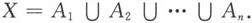
则称A1 ，A2 ，…，An 为集合X的一个n－分划．特别地，如果A1 ，A2 ，…，An 仅满足条件（2），则称A1 ，A2 ，…，An 为集合X的一个覆盖．
二、例题精讲
例1 求最小的和次小的正整数n，使集合｛1，2，…，3n－1，3n｝可以分为n个互不相交的三元组｛x，y，z｝，其中x＋y＝3z．
解 这n个三元组｛xi ，yi ，zi ｝（i＝1，2，…，n）的元素之和为
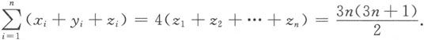
若n为偶数，则必须8｜n；
若n为奇数，则必须8｜3n＋1，从而n＝5，13，…；
当n＝5时，可分为5组：｛4，1，11｝，｛5，2，13｝，｛6，3，15｝，｛7，9，12｝，｛8，10，14｝；
当n＝8时，可分为8组：｛5，1，14｝，｛7，2，19｝，｛8，3，21｝，｛9，4，23｝，｛10，6，24｝，｛11，15，18｝，｛12，16，20｝，｛13，17，22｝．
例2 试确定所有的正整数n，使得集合｛1，2，…，n｝可以分成5个互不相交的子集，且每个子集中元素之和相等．
解 我们先找一个必要条件，若｛1，2，…，n｝能分成5个互不相交的子集，且每个子集的元素和相等，则
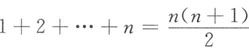
能被5整除，所以n＝5k或n＝5k－1．
显然，当k＝1时，上述条件不是充分的．下面用数学归纳法证明，当k≥2时，条件是充分的．
当k＝2，即n＝9、10时，我们作如下分拆：
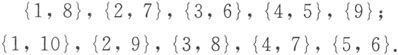
当k＝3，即n＝14，15时，我们有
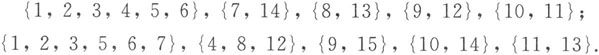
若集合｛1，2，…，n｝能分成5个互不相交的子集，且它们各自的元素和相等，则｛1，2，…，n，n＋1，…，n＋10｝（或｛1，2，…，n，n＋1，…，n＋9｝）也能分成5个互不相交的子集，且它们的元素和相等．事实上，若
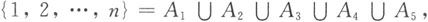
其中Ai 、Aj （i≠j）互不相交，Ai 的元素和与Aj 的元素和相等，则令B1 ＝A1 ∪｛n＋1，n＋10｝，B2 ＝A2 ∪｛n＋2，n＋9｝，B3 ＝A3 ∪｛n＋3，n＋8｝，B4 ＝A4 ∪｛n＋4，n＋7｝，B5 ＝A5 ∪｛n＋5，n＋6｝，于是
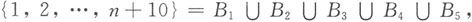
且Bi 与Bj （i≠j）互不相交，每个子集Bi 的元素和相等．
假设对于n＝5k－1、5k，命题正确，由上面的讨论知，对于n＝5（k＋2）－1、5（k＋2）命题也成立，从而证得了当k≥2，n＝5k－1或n＝5k时，集合｛1，2，…，n｝可以分成5个互不相交的子集，且它们各自元素的和相等．
例3 （1）证明：正整数集N* 可以表示为三个彼此不相交的集合的并，且使得：若m，n∈N* ，且∣m－n∣＝2或5，则m、n属于不同的集合．
（2）证明：正整数集N* 可以表示为4个彼此不相交的集合的并，且使得：若m，n∈N* ，且∣m－n∣＝2、3或5，则m、n属于不同的集合．并说明：此时将N* 拆分为三个彼此不相交的集合的并集时，命题不成立．
证明 （1）令A＝｛3k∣k∈N* ｝，B＝｛3k－2∣k∈N* ｝，C＝｛3k－1∣k∈N* ｝，则A、B、C彼此的交为空集，且A∪B∪C＝N* ，并且此时属于同一集合的两个元素之差为3的倍数，不等于2或5．这是一种满足题设条件的取法．
（2）令
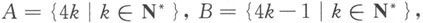
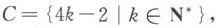
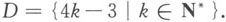
同上讨论，可知命题成立．假设可以将N* 表示为三个集合A、B、C（彼此不相交）的并集，使得：对任意的m，n∈N* ，当∣m－n∣＝2、3或5时，m、n属于不同的集合．不妨设1∈A，则3
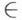
A，从而3∈B或3∈C．不妨设3∈B，则6 A且6 B，故6∈C．依此类推，可知4∈B，8∈A，5∈C，7∈A．这时，9属于A、B、C中任何一个集合均导致矛盾．例4 设S为n个正实数组成的集合，对S的每个非空子集A，记A中各元素之和为f（A）．证明：集合｛f（A）∣A
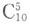
S，A≠φ｝可以分为n个不交的非空子集的并集，并且每个子集中，最大数与最小数的比小于2．证明 设S中的n个元素为（0＜）u1 ＜u2 ＜…＜un ，我们令
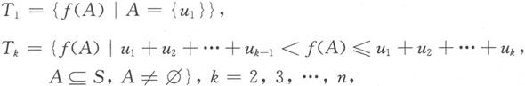
则对
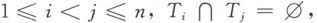
且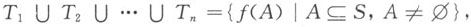
即T1 ，T2 ，…，Tn 为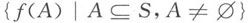
的一个n－分划．在T1 中，最大数与最小数相等（都为u1 ），故其比值为1（＜2）．
当k≥2，Tk 中的最大数为u1 ＋u2 ＋…＋uk ，现分两种情况证明Tk 中的最大数与最小数之比小于2．
如果uk ≤u1 ＋u2 ＋…＋uk－1 ，则Tk 中的最大数与最小数之比Mk 满足
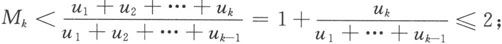
如果uk ＞u1 ＋u2 ＋…＋uk－1 ，这时，由于Tk 中的元素f（A）＞u1 ＋u2 ＋…＋uk－1 ，故A中必含有某个ui ，i≥k，所以uk 是Tk 中的最小元，于是
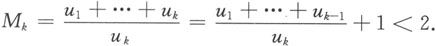
综上所述，T1 ，T2 ，…，Tn 为满足条件的分划．
说明 构造法是处理存在性问题的常见手法．此题中通过比较uk 与u1 ＋…＋uk－1 的大小关系，恰当地处理了Tk 中最大元与最小元的关系，从而顺利完成了证明．这里通过不等式方法定义集合Tk 的方法也是巧妙的．
例5 求出所有的正实数a，使得存在正整数n及n个互不相交的无限集合A1 ，A2 ，…，An 满足A1 ∪A2 ∪…∪An ＝N* ，而且对于每个Ai 中的任意两数b＞c，都有b－c≥ai ．
解 若0＜a＜2，n充分大时，2n－1 ＞an ，令
Ai ＝｛2i－1 m∣m为奇数｝，i＝1，2，…，n－1，
An ＝｛2n－1 的倍数｝，则该分拆满足要求．
若a≥2，设A1 ，A2 ，…，An 满足要求，令M＝｛1，2，…，2n ｝，下证∣Ai ∩M∣≤2n－i ．设Ai ∩M＝｛x1 ，x2 ，…，xm ｝，x1 ＜x2 ＜…＜xm ，则
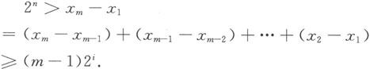
所以，
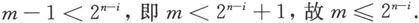
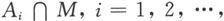
n为M的一个分拆，故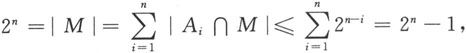
矛盾．
所以，所求的a为所有小于2的正实数．
例6 求所有的正整数n，使得存在一个集合S，满足如下条件：
（1）S由都小于2n－1 的n个正整数组成；
（2）对S的任意两个不同的非空子集A、B，集合A中所有元素之和不等于B中所有元素之和．
解 首先，易知，当n＝2、3时，满足条件的S不存在；当n＝4时，取S＝｛3，5，6，7｝，则S满足条件．
其次，当n≥5，令
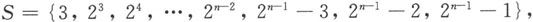
我们证明这样定义的S满足条件．
事实上，设A、B为S的两个不同子集，由于要证的目标是f（A）≠f（B），这里f（x）表示x中所有元素之和，所以，不妨设
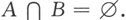
注意到，对任何正整数m，均有
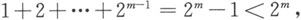
所以，当a、b、c都不属于A∪B时，均有f（A）≠f（B）．这里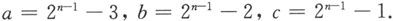
进一步，由于
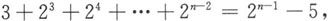
所以，当a、b、c中恰有一个属于A∪B时，例如a∈A，将有f（A）＞f（B），此时，总有f（A）≠f（B）；类似地，讨论a、b、c中恰有2、3个同时属于A∪B时，均可得出f（A）≠f（B）．所以，当n≥4时，满足条件的S都存在．
例7 设集合A1 ，A2 ，…，An 和B1 ，B2 ，…，Bn 是集合M的两个n－分划，已知对任意两个不交的集合Ai 、Bj （1≤i，j≤n），均有
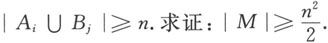
证明 设
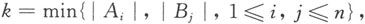
不失一般性设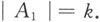
如果
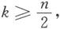
那么由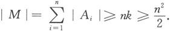
如果
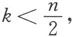
由于B1 ，B2 ，…，Bn 两两不交，故B1 ，B2 ，…，Bn 中至多有k个集合与A1 的交集不空，从而另外的n－k个集合均与A1 的交为空集，故这些集合的元素个数不小于n－k，结合n＞2k，故n－k＞k，我们有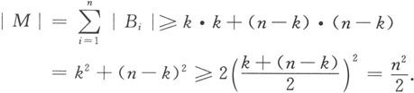
所以命题成立．
说明 这里从Ai 、Bj 中元素个数最少的集合出发，很好地把握了其他集合的元素个数，从而求出∣M∣的一个下界，完成证明．
例8 对实数集A，定义
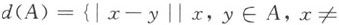
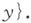
是否存在正整数集N* 的一个由有限个集合组成的分划A1 ，…，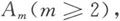
使得每个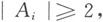
且对任意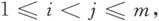
都有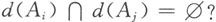
解 不存在满足条件的分划．
事实上，若存在符合条件的A1 ，…，Am ，则其中必有一个是无限集，不妨设A1 是一个无限集．在d（A2 ）中取一个元素n，对A1 中的m个不同元素a1 ，…，am ，考查下面的数：
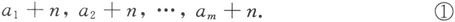
由
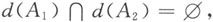
可知n∉d（A1 ），所以，①中的每个数都不在A1 中，它们都属于A2 ∪…∪Am ．因此，由抽屉原则可知①中必有两个数同时属于某个Ak （2≤k≤m）．现设ai ＋n，aj ＋n∈Ak ，则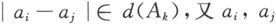
同属于A1 ，从而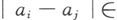
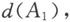
这与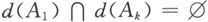
矛盾．所以，不存在符合要求的分划．
说明 集合分划本质上属于组合数学的范畴，最小数原理与抽屉原则等组合中经常用到的结论和方法，在处理集合分划问题时也经常用到．
练 习 题
A 组
1 设p是一个奇质数，n为正整数，T＝｛1，2，…，n｝．称数n为“p－可分的”，如果存在p个T的非空子集T1 ，T2 ，…，Tp 使得：
（1）
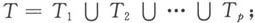
（2）T1 ，T2 ，…，Tp 两两的交集为空集；
（3）Ti （1≤i≤p）中各元素之和相同．
证明下述结论：
（1）设n是“p－可分的”，则p是n或n＋1的约数．
（2）设2p是n的约数，则n是“p－可分的”．
2 证明：正整数集N* 可以分划为无穷多个无穷集A1 ，A2 ，…，使得“若x、y、z、w同属于某个Ai ，则数x－y和z－w同属于某个Ak （i、k不必不同）的充要条件是
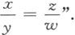
3 对任意正整数n，求（并予以证明）具有下述性质的最小正整数h（n）：对集合｛1，2，…，h（n）｝的任意一个n分划，均存在非负整数a，及满足1≤x≤y≤h（n）的整数x、y，使得a＋x、a＋y和a＋x＋y同时属于该分划的某个部分．
4 求具有下述性质的最小正整数n：将集合｛1，2，…，n｝任意分划为两个不交的子集的并时，有一个子集中含有3个不同的数，其中两个数的乘积等于第3个数．
5 能否将正整数集N* 分划为两个集合A和B？使得
（1）A中任何三个数不成等差数列；
（2）不能由B中的元素组成一个非常数的无穷等差数列．
6 任给整数a、b．定义集合Sa，b ＝｛n2 ＋an＋b∣n∈Z｝．问：从这样的集合组中，最多可以取出多少个集合，使得它们两两不交？
7 将正整数集N* 分为两个集合使得
（1）1∈A；
（2）A中任意两个不同元素之和都不具有2k ＋2（k＝0，1，…）的形式；
（3）B也具有性质（2）．
证明：这样的分划是唯一的．
B 组
8 设r、s、n都是正整数，r＞1，s＞1，r＋s＝n．集合A、B定义如下：
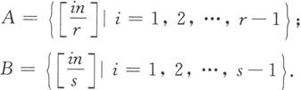
证明：A、B为｛1，2，…，n－2｝的2－分划的充要条件是：（r，n）＝1．
9 设n为给定的正整数，考虑｛1，2，…，n｝的具有下述性质的3－分划A、B、C（允许出现空集）：
（1）将每个子集的元素从小到大排列，则相邻两个数的奇偶性不同；
（2）若A、B、C都不是空集，则其中恰有一个集合的最小元是偶数．
求这样的分划的个数．
10 已知一个长方形R可以分割为n个（n为给定的正整数）两两不重叠的长方形R1 ，R2 ，…，Rn 的并．这里R1 ，R2 ，…，Rn 中每一个的边都与R的边平行，且R1 ，R2 ，…，Rn 中每一个都有一条边的长度为整数．证明：R有一条边的长度为整数．
第21讲
二次函数综合题
一、例题精讲
例1 已知
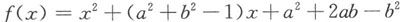
是偶函数，求函数图像与y轴交点的纵坐标的最大值．解 由已知条件可知
函数图像与y轴交点的纵坐标为
令 则
故函数图像与y轴交点的纵坐标的最大值为
例2 设a、b是实常数，当k取任意实数时，函数 的图像都与x轴交于点A（1，0）．
（1）求a、b的值；
（2）若函数图像与x轴的另一交点为B，当k变化时，求∣AB∣的最大值．
解 （1）由题设，抛物线经过点A（1，0），所以
即
对任意实数k恒成立，所以
解得a＝1，b＝1，函数为
（2）设B（x2 ，0），则｜AB｜＝｜x2 －1｜．由于1、x2 是一元二次方程
的两个根，由根与系数的关系得
所以
于是
因此
故｜AB｜＝｜x2 －1｜≤2．当k＝－1时等号成立，所以｜AB｜的最大值为2．
例3 已知函数 当 时， 求证：当x∈［－1，1］时，有
证明 由
可得
所以 且
从而
说明 对于条件：“当 时， 我们常常用 来表示a、b、c，再利用 来解题．对于条件“当x∈［0，1］时，｜f（x）｜≤1”，我们常常用 来表示a、b、c，再利用 来解题．
例4 设 已知 时，
证明 因为
所以
于是
例5 对于函数f（x），若f（x）＝x，则称x为f（x）的“不动点”；若f（f（x））＝x，则称x为f（x）的“稳定点”．函数f（x）的“不动点”和“稳定点”的集合分别记为A和B，即 B＝｛x｜f（f（x））＝x｝．
（1）求证：A⊆B；
（2）若f（x）＝ax2 －1（a∈R，x∈R），且A＝B≠∅，求实数a的取值范围．
解 （1）若A＝∅，显然成立．若A≠∅，则对任意x0 ∈A，
所以x0 ∈B，故A⊆B．
（2）
由 可得
又因A＝B，故方程
要么没有实根，要么实根是方程
的根．
由①无实根，则
若①有实根，且①的实根是②的根，则由②知
代入①中有
再代入②中，
综上，
例6 对于函数f（x），若存在x0 ∈R，使得f（x0 ）＝x0 成立，则称x0 为f（x）的不动点．已知函数
（1）当a＝1，b＝－2时，求函数f（x）的不动点；
（2）若对任意实数b，函数f（x）恒有两个相异的不动点，求a的取值范围；
（3）在（2）的条件下，若y＝f（x）图像上A、B两点的横坐标是函数f（x）的不动点，且A、B两点关于直线 对称，求b的最小值．
解 （1）当a＝1，b＝－2时，f（x）＝x2 －x－3，由x2 －x－3＝x，解得x1 ＝－1，x2 ＝3．故此时f（x）的两个不动点为－1、3．
（2）对任意实数b，函数f（x）恒有两个相异的不动点，即关于x的方程ax2 ＋（b＋1）x＋（b－1）＝x恒有两个不相等的实根，故关于x的一元二次方程
的判别式
对任意实数b恒成立，即关于b的一元二次不等式
恒成立，所以
解得0＜a＜1．
所以，a的取值范围为0＜a＜1．
（3）由题设知，A、B两点应在直线y＝x上，设A（x1 ，x1 ），B（x2 ，x2 ），因为点A、B关于直线 对称，所以k＝－1．
设AB的中点为M（x′，y′），因为x1 、x2 是方程 的两个根，所以
由于点M在直线 上，
所以
由
解得
当 时， 所以，b的最小值为
例7 已知 在［0，1］上的函数值的绝对值不超过1，求｜a｜＋｜b｜＋｜c｜的最大值．
分析 首先利用 来表示a、b、c，然后利用 来估计 的上界，进而构造例子说明能达到这个上界．
解 因为
所以
因此
对于二次函数f（x）＝8x2 －8x＋1，当x∈［0，1］时，｜f（x）｜≤1，且｜a｜＋｜b｜＋｜c｜＝17，所以，｜a｜＋｜b｜＋｜c｜的最大值为17．
例8 求函数f（x）＝｜x2 －a｜在区间［－1，1］上的最大值M（a）的最小值．
解法1 由于f（x）＝｜x2 －a｜在区间［－1，1］上是偶函数，故只需考虑f（x）在［0，1］上的最大值M（a）即可．
若a≤0，则f（x）＝x2 －a，它在［0，1］上是增函数，故
若a＞0，如图21-1所示，当 时，M（a）＝a；当 即 时， 表示u、v中的大的一个）．所以
由于当 时，M（a）是递减的，当 时，M（a）是递增的，故当 ，M（a）最小，最小值为
图21-1
解法2 考虑f（x）在［0，1］上的最大值M（a）．
所以
又当 时， 所以M（a）的最小值为
例9 是否存在一个二次函数f（x），使得对任意的正整数k，当 时，都有 成立？请给出结论，并加以证明．
解 设 则当k＝1、2、3时有
联立①、②、③，解得 于是，
下面证明：二次函数 符合条件．因为
同理
所以所求的二次函数 符合条件．
例10 已知函数 的图像上有两点A（m1 ，f（m1 ））、B（m2 ，f（m2 ））满足
（1）求证：b≥0；
（2）求证：f（x）的图像被x轴截得线段长的取值范围是［2，3）；
（3）问能否得出f（m1 ＋3）、f（m2 ＋3）中至少有一个数为正数？证明你的结论．
解 （1）因为f（m1 ）、f（m2 ）满足
即
所以f（m1 ）＝－a或f（m2 ）＝－a，即m1 或m2 是方程f（x）＝－a的一个实根．
故△≥0，即b2 ≥4a（a＋c），而由f（1）＝0知，b＝-（a＋c），则
即
又因为f（1）＝0，所以a＋b＋c＝0．
而a＞b＞c，可知a＞0，c＜0，3a－c＞0，因此a＋c≤0，即b≥0．
（2）设f（x）＝ax2 ＋bx＋c＝0两根为x1 、x2 ，因为
所以方程f（x）＝0的一个根为1，另一个根为
又因为a＞0，c＜0，所以 由于a＞b＞c且b＝－a－c≥0，则a＞－a－c≥0，可知 因此
（3）设
由f（m1 ）＝－a或f（m2 ）＝－a，不妨设f（m1 ）＝－a，则
因此
因为f（x）＝ax2 ＋bx＋c的对称轴为 所以 则f（x）在［1，+∞）上为增函数，f（m1 ＋3）＞f（1）＝0，因此f（m1 ＋3）＞0．同理当f（m2 ）＝－a时，有f（m2 ＋3）＞0．
因此f（m1 ＋3）、f（m2 ＋3）中至少有一个为正数．
练 习 题
A 组
1 如图所示，抛物线 ＋c和x轴交于两点A和B，AB＝4，P为该抛物线上一点，PC⊥x轴于C点，C点的横坐标为－1， 求抛物线的解析式．
（第1题）
2 已知函数y＝x2 －｜x｜－12的图像与x轴交于相异两点A、B，另一抛物线y＝a2 ＋bx＋c过点A、B，顶点为P，且△APB是等腰直角三角形，求a、b、c的值．
3 证明：无论p取什么实数值时，抛物线 恒通过一个定点，而且这些抛物线的顶点都在一条确定的抛物线上．
4 设x1 、x2 分别是关于x的二次方程ax2 ＋bx＋c＝0和－ax2 ＋bx＋c＝0的一个非零实根，且x1 ≠x2 ．求证：方程 必有一根在x1 与x2 之间．
5 方程 有两个不等的实数解，求实数a的取值范围．
6 设实数a、b、c满足
求a的取值范围．
7 a、b是实常数，f（x）＝x2 ＋2bx＋1，g（x）＝2a（x＋b）．对每一对实数（a，b），把它看成是a－b平面上的一点，令S是使得y＝f（x）和y＝g（x）不相交的（a，b）的集合，求S的面积．
8 已知方程x2 ＋（2m－1）x＋（m－6）＝0有一根不大于－1，另一根不小于1．
（1）求m的取值范围；
（2）求方程两根平方和的最大值与最小值．
9 已知二次函数f（x）＝ax2 ＋bx＋c，当x∈［－1，1］，总有f（x）∈［－1，1］．求证：当x∈［－2，2］时，有f（x）∈［－7，7］．
B 组
10 已知抛物线 与x轴交于两点A、B，与y轴交于点C．若△ABC是等腰三角形，求抛物线的解析式．
11 在坐标平面上，纵、横坐标都是整数的点称为整点．在二次函数 的图像上找出满足y≤｜x｜的所有整点（x，y），并说明理由．
12 设f（x）是定义在区间（-∞，+∞）上以2为周期的函数．对k∈Z，用Ik 表示区间（2k－1，2k＋1］．已知当x∈I0 时，f（x）＝x2 ．
（1）求f（x）在Ik 上的解析式；
（2）对正整数k，求集合Mk ＝｛a｜方程f（x）＝ax在Ik 上有两个不相等实根｝．
13 已知a、b、c都是正整数，且抛物线y＝ax2 ＋bx＋c与x轴有两个不同的交点A、B，若A、B到原点的距离都小于1，求a＋b＋c的最小值．
14 二次函数f（x）＝ax2 ＋bx＋c的系数a、b、c都是整数，f（0）＞0，并且f（x）在（0，1）中有两个不同的根．求a的最小值．
15 设f（x）＝ax2 ＋bx＋c．当｜x｜≤1时，｜f（x）｜≤1．求证：当｜x｜≤1时，｜2ax＋b｜≤4．
16 设x∈［－1，1］时，恒有｜ax2 ＋bx＋c｜≤1．求证：对一切x∈［－1，1］，有｜cx2 ±bx＋a｜≤2．
第22讲
离散量的最大值和最小值
一、知识要点和基本方法
最值问题是数学竞赛中的热门话题，前面，已经讨论了与函数有关的最值问题，研究了函数在自变量取遍定义域内的所有实数时，函数值所能取到的最大值和最小值等问题．
有一类最值问题，涉及的自变量是正整数、整数、集合与子集等离散量，要求对自变量在某些限制条件下变化时，求出目标函数的最大值或最小值．这类问题称为离散最值问题．
解决离散最值问题，往往包含“论证”与“构造”两个方面：一方面需要论证（或求出）目标函数在离散量的变化过程中的精确上界或下界；另一方面，还需构造出一个实例，用以说明在所给限制条件下，目标函数可以达到这个上界或下界．正是由于这种在处理一个问题时需要两方面考虑，或者需要从一个思路跳跃到另一个思路（注意，论证和构造的处理手法和出发点可能相距甚远），因而，更能反映出解题者驾驭全局、周密思考的能力．
二、例题精讲
例1 平面上整点集 T为平面上一整点集，对S中任一点P，总存在T中不同于P的一点Q，使得线段PQ上除点P、Q外无其他的整点．问T的元素个数最少要多少？
解 答案：最少个数为2．
先证T不可能只包含一个点．
若不然，设T＝｛Q（x0 ，y0 ）｝．在S中可以取出一点P（x1 ，y1 ）满足（x1 ，y1 ）≠（x0 ，y0 ）且x1 与x0 同奇偶，y1 与y0 同奇偶，则线段PQ的中点为一整点，矛盾．
T含两个点的情形如下图所示：
图22-1
综上所述，｜T｜的最小值为2．
例2 设n为给定的正整数，集合A是｛1，2，…，2n－1｝的一个子集，满足：A中任意两个不同的正整数之和都不等于2n－1和2n．求｜A｜的最大值．
解 注意到，当A＝｛n，n＋1，…，2n－1｝时，A中最小的两个数之和都不小于2n＋1，故A中任意两个不同正整数之和不等于2n－1或2n．因此，｜A｜的最大值不小于n．
另一方面，考察下面的数列（它是1，2，…，2n－1的一个排列）
其中任意两个相邻数之和都为2n－1或2n．而由抽屉原则可知：当
时，A中必有两个数在上述数列中相邻，所以，符合条件的A的元素个数不大于n．
综上可知，｜A｜的最大值为n．
说明 上述推导过程中实质上还说明了当｜A｜＝n时，A必为
例3 设n为正整数，求最小的正整数k，使得存在k个长度为2n＋2的0，1数列满足：对任意一个长度为2n＋2的0、1数列A，在上述k个数列中，都有一个数列B，使得数列A、B在至少n＋2个相应位置上的数码相同．
解 所求最小正整数k＝4（找到这个答案是解决本题的关键，当然也是此题的难点）．
一方面，考察下面的四个数列：
对每一个长度为2n＋2的0、1数列X而言，如果X中0（或1的个数≥n＋2），那么X与A（或B）在至少n＋2个相应位置上的数码相同．在X中0的个数与1的个数都为n＋1时，看数列X的第一项，当X的第一项为0（或1）时，X与D（或C）在至少n＋2个相应位置上的数码相同．所以，k≤4．
另一方面，对任意三个数列
当m＝1，2，…，n＋1时，存在数对（d2m－1 ，d2m ）不同于（a2m－1 ，a2m ），（b2m－1 ，b2m ）和（C2m－1 ，C2m ）中的任何一个（因为0，1的两元数对共有4个），因此，取D＝（d1 ，d2 ；d3 ，d4 ；…；d2n＋1 ，d2n＋2 ），则D与A，B，C中任何一个都至少在n＋1个相应位置上不同．这表明只有三个数列作为“模板”是不够的．
综上可知，所求最小正整数k＝4．
例4 设M是平面直角坐标系中100个点组成的集合．求满足下述条件的长方形的个数的最大可能值：该长方形的顶点都是M中的点，且其边都与坐标轴平行．
解 当M＝｛（x，y）｜1≤x，y≤10，x，y∈N* ｝时，以M中的点为顶点的长方形个数为（ ）2 ＝452 ＝2025（这时M中的点恰构成一个10×10的正方形点阵，从这个正方形中取两条横线与两条竖线围出的长方形即为所有以M中的点为顶点的长方形），因此，所求长方形个数的最大可能值不小于2025．
另一方面，对M中的任意一点O，平移坐标系，使O为原点，并设新的坐标系中x轴上有M中x个点，y轴上有M中y个点（这里计算坐标轴上的点时不计入点O），则以O为一个顶点的长方形（该长方形的顶点都在M中）的个数T满足：
（1）T≤xy，这是因为该长方形必有一个点在x轴上，也必有一个点在y轴上，第四个点的位置由x轴上的点所作x轴的垂线与y轴上的点所作y轴的垂线交出（它不一定在M中）．
（2）T≤100－（x＋y＋1），这是因为该长方形与O相对的顶点不在坐标轴上，此点与O决定该长方形．
所以， 若 则 若x＋y＞18，则T≤99－x－y＜81．因此，总有T≤81，即M中的每个点都至多是81个长方形的顶点，这表明符合条件的长方形的个数不超过 （除以4是因为每个长方形都有4个顶点，被计算过4次）．
综上可知，所求长方形个数的最大值为2025．
说明 这个问题的论证过程中采用了“局部到整体”的思想，在每个局部具有一定的对称性和协调性时经常采用此思想．
例5 16名学生参加一次数学竞赛，考题全是选择题．每个选择题有4个选择支，考生从每个题中选择一个选择支作为答案．考后发现任何两名学生的答案至多有一道题相同．问这次竞赛最多有多少道考题？说明理由．
解 先估计考题数的上界．
设共有k道题，四个选择支是1、2、3、4，有ai 个学生对问题S的答案为i，i＝1、2、3、4．则a1 ＋a2 ＋a3 ＋a4 ＝16．
如果某两个人对某道题的答案相同，就称这两个人为一个“两人对”．
下面考虑对问题S答案相同的“两人对”的个数A，则
所以，k个问题至少产生24k个不同的“两人对”．但是，由题意，任意两个人至多产生一个“两人对”，所以， 故k≤5．
下面给出一张具体的答题表，说明k＝5是可能的．
其中P1 ，P2 ，…，P16 表示这16名学生．
综上，最多有5道考题．
例6 在一次由n个是非题构成的竞赛中，有8名选手参加，已知对任意两个是非题（A，B）而言（视（A，B）为有序对），恰有两个人的答案为（对，对）；恰有两个人的答案是（对，错）；恰有两个人的答案是（错，对）；恰有两个人的答案是（错，错）．求n的最大值，并说明理由．
解 考虑一个由8行、n列组成的表格．在此表格的第i行、第j列处的格子上写上数0（1），如果第i个人对第j个题的答案是对（错）．
由条件，在表格的任意两列中，与各行相交形成的8个有序对恰好是两个00，两个01，两个10和两个11．
如果n≥8，我们只考虑表格的前8列组成的8×8的子表格，注意到，将任何一列中的0全部换为1；而将1全部换为0，此表格中的各数仍具有题中的性质．所以，我们不妨设此8×8的子表格的第一行全部为0．记这个8×8的子表格中第i行中0的个数为ai ，通过对每两列予以考虑，可知 而由各行形成的00对的个数为
一方面，由于a1 ＝8，从而 故
所以，由各行形成的00对的个数不小于58．
另一方面，依每两列进行计算，由各行形成的00对的个数应为 对．
这表明，应有56≥58，矛盾．所以n≤7．
下面的例子表明n可以为7．
综上可知，所求的最大值为7．
说明 例5与例6在处理上有许多相似之处，论证过程中都用到了“算两次”的思想，通过对某一个特殊量从两个方面计算估计出要求的离散最值，最后，通过实例说明此最值是可以达到的．希望同学们细细体会这一处理方法．
例7 10个学生参加n个课外小组，每一个小组至多5个人，每两个学生至少参加某一个小组，而任意两个课外小组，至少可以找到两个学生，他们都不在这两个课外小组中．证明：n的最小值为6．
证明 设10个学生为S1 ，S2 ，…，S10 ，n个课外小组为G1 ，G2 ，…，Gn ．
首先，每个学生至少参加两个课外小组．否则，若有一个学生只参加一个课外小组，设这个学生为S1 ，由于每两个学生都至少在某一小组内出现过，所以其他9个学生都与他在同一组出现，于是这一组就有10个人了，矛盾．
若有一学生恰好参加两个课外小组，不妨设S1 恰好参加G1 ，G2 ，由题设，对于这两组，至少有两个学生，他们没有参加这两组，于是他们与S1 没有同过组，矛盾．
所以，每一个学生至少参加三个课外小组．于是n个课外小组G1 ，G2 ，…，Gn 的人数之和不小于3×10＝30．
另一方面，每一课外小组的人数不超过5，所以n个课外小组G1 ，G2 ，…，Gn 的人数不超过5n，故
所以n≥6．
下面构造一个例子说明n＝6是可以的．
容易验证，这样的6个课外小组满足题设条件．所以，n的最小值为6．
例8 在一个跨国公司中，有250名职员，他们每个人都可说好几国语言，已知对任意一对职员（A，B）而言，存在一门语言A能讲，而B不会；也存在一门语言B能讲，而A不会．问：这家跨国公司中，至少有多少种语言（指有职员会讲的语言的总数）？
解 设该公司中，有职员会讲的语言构成的集合为S＝｛a1 ，a2 ，…，an ｝，并用A1 ，A2 ，…，A250 表示每个职员会讲的语言构成的集合，则 且对任意1≤i＜j≤250，集合Ai 与Aj 互不包含．
我们首先证明：
事实上，考虑S中所有元素的排列的个数T，则T＝n！．
另一方面，设以Ai 中的元素开头的S的全排列的个数为Ti ，则 这里｜X｜表示X的元素个数．
我们说以Ai 中元素开头的S的全排列与以Aj （i≠j）中元素开头的S的全排列是不同的．因为，如果｜Ai ｜≤｜Aj ｜，且所言的两个S的全排列相同，则Ai ⊆Aj ，反之若｜Ai ｜＞｜Aj ｜，则Aj Ai ，这与Ai 、Aj 互不包含矛盾．
综合上述讨论，可知
即 所以，有
结合组合数的性质，可知 从而，
于是，
注意到，满足 的最小正整数n＝10，并且，当n＝10时，S的所有5元子集（共 ＝252个）是互不包含的，这表明，该公司中至少有10种语言．
说明 一般地，设A1 ，A2 ，…，Am 是集合S＝｛a1 ，a2 ，…，an ｝的子集，且对任意1≤i＜j≤m，均有Ai 与Aj 互不包含，则m的最大值为 这一结论是组合数学中著名的斯潘那定理．
练 习 题
A 组
1 从1，2，…，100中任取k个数，其中一定有两个数互质，求k的最小值．
2 若干个互不相同的正整数的和为200，则它们乘积的最大值是多少？
3 对任意集合X，用｜X｜表示X中的元素个数，n（X）表示X的子集的个数（包括空集与X本身）．已知集合A、B、C满足
求 的最小可能值．
4 将9个1，9个2，…，9个2000共18000个数填入一个9行、2000列的表格（每格一个数），使得任何一列中的任意两数之差的绝对值不超过3．求这个表格的每列中各数之和（共2000个列和）的最小值的最大值．
5 设M＝｛1，2，…，19｝，集合A＝｛a1 ，…，ak ｝为M的子集．求最小的k，使得对任意b∈M，都存在ai ，aj ∈A，使得b∈｛ai ，ai ＋aj ，ai －aj ｝（这里ai 和aj 可以相同）．
6 在一个由有限项构成的实数数列中，任何连续7项之和都为负数，而任何连续11项之和都是正数．试问：该数列至多有多少项？
7 某市有n所中学，第i所中学派出Ci 名学生（1≤Ci ≤40，1≤i≤n）到体育馆观看球赛，全部学生总数为 ＝2000．每一横排有200个座位，要求同一学校的学生必须坐在同一横排．问：体育馆最少要安排多少横排才能保证全部学生都能坐下？
8 设M为｛1，2，3，…，15｝的子集，且M中任意3个元素之积不是完全平方数．求M的元素个数的最大值．
B 组
9 我从1，2，…，144中任取一个数，你每次取一个｛1，2，…，144｝的子集，问我取的数是否在该子集中，最终确定我取的数．若每次回答，答案是Yes，则你需付出2元，答案是No，则你需付出1元．为保证能找出我取的数，你需要付出的钱的最小值为多少？
10 黑板上写着128个1，进行如下操作：每次擦去黑板上的任意两数a和b．并写上数ab＋1，这样，经127步操作后，黑板上剩下一个数．设最后剩下的那个数的最大值为A，求A的末位数字．
11 设n≥5，且a1 ，a2 ，…，an 是n个正整数，对任意1≤i≤n，均有ai ≤2n．证明：
这里［x，y］表示x、y的最小公倍数，而［x］表示实数x的整数部分．
12 正整数集的子集M＝｛a1 ，a2 ，…，an ｝具有如下性质：M中任意两个不相交的非空子集中的元素之和不相等．求 的最大值，这里n为给定的正整数．
13 设n是给定的正整数（n≥2），四个正整数a、b、c、d满足 的最大值．
14 设n为给定的正整数，a1 ，a2 ，…，an 是n个正整数，且 求 的最大值．
第23讲
简单的函数迭代和函数方程
一、知识要点和基本方法
设f：D→D是一个函数，对任意x∈D，记f（0） （x）＝x，f（1） （x）＝f（x），f（2） （x）＝f（f（x）），…，f（n＋1） （x）＝f（f（n） （x）），n∈N．我们称由此定义的函数f（n） （x）为f（x）的n次迭代．
函数迭代的理论与方法在计算数学等领域有着很重要的应用，然而，由于它的一些方法和结果是初等的，因而在中学数学竞赛中也屡有出现．
含有未知函数的方程称为函数方程，例如
和
等等都是函数方程，其中f（x）为未知函数．
如果一个函数f（x）对其定义域内自变量的一切值都满足所给的方程，则称f（x）为这个函数方程的一个解．寻求函数方程的解或证明函数方程无解的过程就是解函数方程．
对一般的函数迭代与函数方程的问题没有统一的方法来处理，只能具体问题具体分析．常见的一些方法有：不动点方法（称满足f（x）＝x的点为函数f（x）的不动点）、桥函数相似法、特殊值方法、换元法、递推方法、Cauchy方法、不等式估计、先猜后证等．
二、例题精讲
例1 设f（x）的定义域是所有非零实数组成的集合，且满足对任意x，都有
求f（x）．
解 用 代换①中的x，得
从①、②中消去 得
经检验， 满足题设．
说明 利用方程组消元的思想是处理简单函数方程问题的常见方法，此题中“检验”是解函数方程问题的一个重要组成部分，它体现出思维的完备性．一般而言，我们总是从题给条件出发得到所求函数f（x）应具有的必要条件，然后代入检验（尽管这可能是容易的，但不可或缺）去得到f（x）的充分性．
例2 求所有的函数f：N* →N* ，使得对任意x，y∈N* ，都有
解 记f（1）＝a，由①中x＝y＝1的情形，可得f（1＋a）＝1＋a，再在①中令（x，y）＝（1，1＋a），得f（2＋a）＝2a＋1．又f（2＋a）＝f（2＋f（1））＝f（2）＋1，故f（2）＝2a．
现在，我们有f（1＋2a）＝f（1＋f（2））＝f（1）＋2＝a＋2，又
所以，f（a）＝1，进而，f（2a）＝f（a ＋f（1））＝f（a）＋1＝2．于是
结合a，f（2a－1）∈N* ，可知a＝1，即f（1）＝1．
利用上述结论及①可知，对任意x∈N* ，都有f（x＋1）＝f（x＋f（1））＝f（x）＋1，结合f（1）＝1，由数学归纳法可得f（x）＝x．而f（x）＝x显然满足条件，故所求函数f（x）＝x．
说明 此题通过确定f（1）的值来寻求突破口，使问题迎刃而解，是处理函数方程问题时的又一个常见方法．
例3 求所有的函数f：R→R，使得：对任意x，y∈R，都有
解 我们从计算f（0）的值来寻求突破口．
设f（0）＝a，在①中，令x＝y＝0，就有
进一步，在①中，令x＝y＝a2 ，利用②式，有
换一角度来看f（4a2 ），在①中，令x＝4a2 ，y＝0，就有
于是f（0）＝0，这时，在①中令y＝0，就有
从而，对任意x∈R，都有f（x）＝0．
直接验证可知该函数符合，故f（x）＝0（x∈R）．
例4 设n（≥2）是一个给定的正整数．函数f：R→R满足对任意x，y∈R，都有
证明：对任意x∈R，都有f（x2 ）＝f（1）n－2 f（x）2 ．
证明 在①中令x＝y＝0，得f（0）＝0．于是，对任意y∈R，有f（yn ）＝f（y）n ．因此，若z＞0，取y＝ ，则 此式中取x＝-z，得f（-z）＝-f（z），故f是一个奇函数．进而，对x，y∈R，都有
满足②的函数方程称为Cauchy方程，利用数学归纳法易证：对任意k∈N* ，有f（kx）＝kf（x）；再由f（-x）＝-f（x），可知对任意k∈Z，有f（kx）＝kf（x）；进一步，对k∈Q，设 则f（q（kx））＝qf（kx），而q（kx）＝px，故f（q（kx））＝f（px）＝px，于是， 因此，对任意x∈R及k∈Q，都有f（kx）＝kf（x）．
现在，对任意给定的x∈R，可知对任意k∈Q，都有
由②结合 可得
另一方面，有
对比上述两式可知
视x为常数，上式两边都是关于k的多项式，由于此式对所有k∈Q都成立，因此上式两边恒等，进而关于k的相同幂次对应的系数相同，对比两边kn－2 项系数，就有
故f（x2 ）＝f（1）n－2 f（x）2 ．命题获证．
说明 对于②的处理所采用的方法是著名的Cauchy方法，它体现的是从正整数到整数再到有理数逐步推进的思想．
例5 求所有的实数a，使得存在函数f：R→R，满足对任意x，y∈R，都有
解 当a≤0时，取f（x）＝x2 ，利用 可知存在符合要求的函数．
下证：当a＞0时，不存在符合要求的函数．
事实上，若对某个a＞0，存在符合条件的函数f，则对任意n∈N* 及i∈N，由①可得
进而，
将②对i＝0，1，2，…，n－1求和，可得
将②对i＝1，2，…，n求和，可得
……
将②对i＝n－1，n，…，2n－2求和，可得
对所得到的n个不等式求和，就有
在a＞0时，令n→+∞，上式不能成立．
所以，当且仅当a≤0时，存在符合要求的函数．
下面我们来讨论一些与函数迭代有关的问题．
例6 设n∈N* ，分别求下述函数的n次迭代函数f（n） （x）．
（1）f（x）＝ax＋b，这里a、b为实常数．
（2）f（x）＝2x2 －1，｜x｜≤1．
解 （1）如果a＝1，易得f（n） （x）＝x＋nb．
如果a≠1，我们写 这里 是满足f（x）＝x，即ax＋b＝x的根，也就是f（x）的不动点．现在可得 依次递推可得
综上可知，
（2）为求f（n） （x），我们引入“桥函数”的概念．若存在一个函数φ（x）及它的反函数φ－1 （x），使得f（x）＝φ－1 （gφ（x））），则称函数f（x）与g（x）相似，其中φ（x）为f（x）与g（x）的桥函数．如果f（x）与g（x）相似，即存在φ（x），使得f（x）＝φ－1 （g（φ（x））），则f（2） （x）＝φ－1 （g（φ（f（x））））＝φ－1 （g（φ（φ－1 （g（φ（x））））））＝φ－1 （g（2） （φ（x）））．依次递推，就有f（n） （x）＝φ－1 （g（n） （φ（x）））．
回到原题，取g（x）＝2x，φ（x）＝arccosx，则φ－1 （x）＝cosx．于是f（x）＝2x2 －1＝2cos2 （arccosx）－1＝cos（2arccosx）＝φ－1 （g（φ（x））），所以f（x）与g（x）通过“桥函数”φ（x）＝arccosx相似．从而结合g（n） （x）＝2n x（这利用（1）的结果可得），知f（n） （x）＝φ－1 （g（n） （φ（x）））＝cos（2n arccosx）．
说明 这两个函数迭代分别利用了不动点方法和桥函数相似法，它们是处理函数迭代问题的常见方法．
对比（2）的结果，利用三角函数的性质可知f（x）＝cos（narccosx）是关于x的一个n次多项式，这个多项式是著名的切比雪夫多项式，它有很多应用．
例7 设 对任意n∈N* ，定义 证明：
（1）对任意x＞y＞0，都有gn （x）＞gn （y）；
（2） 其中 （这是著名的Fibonaccia数列）．
证明 熟知函数 在x＞1时单调递增，所以x＋ 单调递增（因为x＞0，故x＋1＞1）．注意到f（x）在x＞0时单调递减，故f（2） （x）在x＞0时单调递增，进而f（2） （x）＋f（3） （x）单调递增（在x＋f（x）中，用f（2） （x）代替x）．依此类推可知f（2m） （x）在x＞0时单调递增，而且f（2m） （x）＋f（2m＋1） （x）在x＞0时也单调递增．所以当n＝2m时， 单调递增；当n＝2m＋1时， 单调递增，所以（1）成立．
对于（2），由于 所以
故
故（2）成立．
例8 函数f：R→R满足下述条件：
（1）对任意x，y∈R，都有｜f（x）－f（y）｜≤｜x－y｜；
（2）存在k∈N* ，使得f（k） （0）＝0，这里f（1） （x）＝f（x），f（n＋1） （x）＝f（f（n） （x））．
求证：f（0）＝0或者f（f（0））＝0．
证明 由条件（2），我们设k是最小的满足f（k） （0）＝0的正整数．如果k≥3，那么
所以，｜f（k－1） （0）｜＝｜f（0）｜．
若f（k－1） （0）＝f（0），则f（f（0））＝f（k） （0）＝0，矛盾．
若f（k－1） （0）＝-f（0），则
因此，上述不等式全部取等号．从而，对2≤j≤k－1，都有
即
由k的最小性，可知f（0），f（2） （0），…，f（k－1） （0）都不等于零，结合上式，可得f（2） （0）＝2f（0），f（3） （0）∈｛f（0），3f（0）｝，f（4） （0）∈｛2f（0），4f（0）｝，依次递推，可知f（k－1） （0）是f（0）的正整数倍，与f（k－1） （0）＝-f（0）矛盾．
综上可知，命题成立．
练 习 题
A 组
1 设f（x）＝x2 ＋ax＋bcosx，求所有的实数对（a，b），使得方程f（x）＝0与f（f（x））＝0的实数解构成的集合相同（都是非空集合）．
2 设f（x）＝3x＋2．证明：存在m∈N* ，使得f（100） （m）能被2000整除．
3 已知 求f（n） （x）的表达式．
4 求一个函数g（x），使得g（8） （x）＝x2 ＋2x．
5 n（≥3）是一个正整数，用f（n）表示不是n的约数的最小正整数（例如f（12）＝5）．若f（n）≥3，再求f（f（n）），若f（f（n））≥3，又可求f（3） （n）等等．如果f（k－1） （n）≥3，而f（k） （n）＝2，则称k为n的“长度”，记作ln ．求由ln 构成的集合．
6 多项式Pn （x）递归定义如下：
对任意正整数n，求方程Pn （x）＝0的根．
7 多项式Pn （x，y），n＝1，2，…定义如下：
证明：对任意x、y及正整数n，均有Pn （x，y）＝Pn （y，x）．
8 设对实数x（≠0，1），都有 求函数f（x）．
9 求所有的非零函数f：R→R，使得对任意x、y，均有
10 求所有定义在非零实数上的函数f（x），使得：
（1）对所有
（2）对任意x≠-y，x，y∈R．均有
B 组
11 设S＝｛1，2，3，4，5｝．问：有多少个函数f：S→S，使得对任意x∈S，都有f（50） （x）＝x？
12 求所有的函数f：Z→Z，使得对任意x∈Z，都有
13 求所有的函数f：R→R，使得对任意x，y∈R，都有
14 求所有的函数f：［1，+∞）→［1，+∞），使得
（1）
（2）函数 是一个有界函数．
15 证明：不存在函数f：R+ →R+ ，使得对x，y∈R+ ，都有
第24讲
构造函数解题
一、知识要点和基本方法
在处理某些方程、不等式等问题时，我们常常构造一个函数，利用函数的图像和性质来解决问题．“构造”体现你的创造能力．
二、例题精讲
1．构造一次函数
例1 设a、b、c是绝对值小于1的实数，证明：
证明 构造一次函数
它的图像是一条线段，但不包括两个端点（－1，f（－1）），（1，f（1）），若能证明其两个端点的函数值f（－1）和f（1）均大于0，则对定义域内的每一点x，f（x）恒大于0．
因为 f（－1）＝－（b＋c）＋bc＋1＝（b－1）（c－1）＞0，
f（1）＝（b＋c）＋bc＋1＝（b＋1）（c＋1）＞0，
所以，当－1＜x＜1时，f（x）恒大于0，故
例2 设x，y，z∈（0，1），求证：
证明 设
f（x）＝（1－y－z）x＋y＋z－yz－1，0＜x＜1，
把y、z看作常数，则f（x）是关于x的一次函数．
因为
所以，对于0＜x＜1，都有f（x）＜0，即
所以
说明 利用一次函数的单调性来证明不等式是一种常用的方法．关键是如何“构造”好这个一次函数．
例3 若不等式 对－1≤a≤1恒成立，求x的取值范围．
解 由题意知，不等式ax2 ＋7x－1＞2x＋5对－1≤a≤1恒成立．即关于a的不等式x2 a＋5x－6＞0对－1≤a≤1恒成立．令
则
所以，2＜x＜3．
2．构造二次函数
例4 已知当x∈［0，1］时，不等式
恒成立，其中0≤θ≤2π．求θ的取值范围．
解 设
因为 所以
由于f（x）的对称轴 且 所以f（x）在［0，1］上的最小值就是f（x）在R上的最小值，它大于0．故
即
所以
θ的取值范围是
例5 设a1 ，a2 ，…，an ，b1 ，b2 ，…，bn 是实数，证明：
证明 若 则 此时命题显然成立．
若 构造一个二次函数
这是一条开口向上的抛物线，而且f（x）≥0恒成立，所以
即
其中等号当且仅当ai ＝kbi ，i＝1，2，…，n，k是某个常数时成立．
说明 上面的这个不等式就是著名的柯西不等式．从柯西不等式的证明过程来看，对于要证明
这类不等式，我们先把不等式变形为
然后构造一个二次函数
再设法证明其判别式≥0（或≤0）．
例6 设a、b、c、d是实数，且满足
求证：ab＋bc＋ca≥3d．
分析 若能证明ab≥d，则同理可证bc≥d，ca≥d，从而命题得证．题设不等式可变形为
于是可构造函数
证明 构造函数
f（x）是开口向上的抛物线，且f（c）≤0，从而抛物线与x轴有交点，于是
所以
同理可证bc≥d，ca≥d．所以
3．构造其他函数
例7 已知 且
求cos（x＋2y）的值．
解 原方程组可化为
设f（t）＝t3 ＋sint，则f（t）在 上是单调增加的，又 且 所以
所以
例8 设f（x）是一个98次的多项式，使得
求f（100）的值．
解 构造一个函数
则 g（1）＝g（2）＝…＝g（99）＝0，
并且g（x）是99次多项式，所以
其中g（x）的首项系数a是一个待定常数．由于
是一个98次多项式，故a（x－1）（x－2）…（x－99）＋1的常数项必须为0，即
所以
因此
所以
说明 对于二次三项式f（x）＝ax2 ＋bx＋c，若f（x）＝0有两个根x1 、x2 ，则f（x）＝a（x－x1 ）（x－x2 ）．一般地，一个n（≥2）次多项式f（x）＝an xn ＋an－1 xn－1 ＋…＋a1 x＋a0 ，若它的n个根为x1 ，x2 ，…，xn ，则f（x）＝an （x－x1 ）（x－x2 ）…（x－xn ）．
例9 △ABC的三边长a、b、c满足a＋b＋c＝1，求证：
证明 由题设得
所以原不等式等价于
构造一个三次函数
由于a＋b＋c＝1，且a、b、c是三角形的三条边长，故0＜a，b，c＜ ，从而
一方面，
另一方面，
故
所以
从而命题得证．
练 习 题
A 组
1．已知方程ax2 ＋bx＋c＝0有两个相异实根，求证：方程 （此处k是不等于0的常数）至少有一个根在前一方程的两根之间．
2 已知｜a｜＜1，｜b｜＜1，求证：
3 设a、b是实数，二次方程x2 －ax＋b＝0的一个根属于区间［－1，1］，另一个根属于区间［1，2］．求a－2b的取值范围．
4 已知a、b、c为实数，满足关系式：
证明：a、b、c中必有一个为2．
5 设a、b、c是三个实数，且a＜b＜c，求证方程
有两个实根，并且一根介于 之间，另一根介于 之间．
6 已知实数x、y满足
求4x＋y的值．
7 已知关于x的方程
证明：方程的正根比1小，负根比－1大．
8 求证：在区间 内只存在的两个数c＜d，使得
9 设x1 、x2 、x3 、y1 、y2 、y3 是实数，且满足 求证：
10 △ABC的三边长为a、b、c，周长为2，求证：
B 组
11 是否存在一个R到R上的函数f，使得f（x）≢x，且f（f（f（x）））＝x．
12 已知a、b、c为实数，且a＋b＋c＞0，ab＋bc＋ca＞0，abc＞0．求证：a＞0，b＞0，c＞0．
13 已知a1 ，a2 ，…，an 为正实数，满足
又λ1 ，λ2 ，…，λn 为实数，并且
求证：
14 设x1 ≥x2 ≥x3 ≥x4 ≥2，且x2 ＋x3 ＋x4 ≥x1 ．求证：
15 已知
其中a、b、c、d、k都是实数，且｜k｜＜2．求证：
第25讲
向量与几何
一、知识要点和基本方法
向量既反映数量关系、又体现位置关系，从而能数形相辅地用代数方法研究几何问题，即把几何问题恰当地代数化，从而用代数运算解几何问题．作为处理几何问题的一种工具，向量方法兼有几何的直观性、表述的简洁性和方法的一般性．
1．使用向量的第一步，是要在图中指定基础向量，这些基础向量一般选线性无关的．一旦确定了基础向量，在整个问题的解决过程中都将以此为依据而进行计算．
2．在确定点的位置时，经常用向量的线性关系（这是向量的重要性质，贯穿在整个向量法中）来解决．
3．在处理垂直关系、长度关系及交角等问题时，一般用向量的内积来解决．
4．几何中的旋转变换问题在向量法中对应的是向量的外积表示，由向量的外积可以表示平面上一个向量旋转以后的向量．
二、例题精讲
例1 O为△ABC的外心，H为垂心．求证：
图25-1
证明 如图25-1，作直径BD，连结DA、DC，有
故 CH∥DA，AH∥DC，得AHCD是平行四边形，进而有 得
例2 求证：△ABC的外心O、重心G、垂心H三点共线，且OG∶GH＝1∶2．
证明 由例1知 由第19讲例2的说明知 所以 得 这表明O、G、H共线，且
说明 点O、G、H是著名的Euler线，本题的结论在用向量处理时显得简洁、明了．
例3 四边形A1 A2 A3 A4 为⊙O的内接四边形，H1 、H2 、H3 、H4 依次为△A2 A3 A4 、△A3 A4 A1 、△A4 A1 A2 、△A1 A2 A3 的垂心．求证：H1 、H2 、H3 、H4 四点共圆，并定出该圆的圆心．
证明 设 由于H1 是△A2 A3 A4 的垂心，则 得
同理
这表明H1 、H2 、H3 、H4 在以C为圆心、R为半径的圆周上．
例4 如图25-2，△ABC与△AD0 E0 都是等腰直角三角形， E0 在AC上，且AE0 ≠AC．将△AD0 E0 绕A点旋转任一角度θ，得△ADE．
求证：EC上存在点M，使△BMD也是等腰直角三角形．
图25-2
证明 取基础向量 是由 旋转 角得到的．所以
同理
在CE上取点M，把 表示成
且0≤m≤1．如果能找到这样的m适合①，则点M存在．此时
而 欲使△BMD适合条件，则 所以
其中应用关系 表示 连续逆时针转两个90°，则得 整理得
但在 的情况下， 而 与 垂直，所以只有 这表明M是EC的中点，故M点存在．
例5 在四面体ABCD中，AB＝AC＝AD，点O为其外接球球心，G为△ACD的重心，E为BG的中点，F为AE的中点．证明：OF⊥BG的充要条件是OD⊥AC．
证明 尽管此题中出现一些立体几何的知识，但它也是向量运用的重要阵地，通过本例可以看出向量在处理垂直关系中的力量．
以O为原点，利用位置向量来处理．由条件，可知
结合 等式子，对①平方后，利用②可知
现在，我们有
利用②、③的结论，可得
依此可知，
命题获证．
例6 如图25-3，△ABC中，O为外心，三条高AD、BE、CF交于点H，直线ED和AB交于点M，FD与AC交于N．
求证：（1）OB⊥OF，OC⊥DE；（2）OH⊥MN．
图25-3
证明 （1）由题意，A、F、C、D共圆，所以∠BDF＝∠BAC．又因为O为外心，
∠BOC＝2∠BAC，∠OBC＝∠OCB，
故
所以，OB⊥DF．
同理OC⊥DE．
（2）因为MF⊥CH，FN⊥OB，MD⊥OC，AN⊥BH，DF⊥OB，FA⊥CH，DA⊥BC，所以
于是
所以MN⊥OH．
例7 在△ABC中，∠A＝60°，点P为△ABC所在平面上一点，使得PA＝6，PB＝7，PC＝10．求△ABC的面积的最大值．
图25-4
解 如图25-4所示，作平行四边形APEC和平行四边形ABDC，则BPED为平行四边形．
由于
注意到， 所以，
于是，我们有
PD2 －100＋36－49＝CD·PE．
利用托勒密定理知CD·PE≤PD·CE＋PC·ED＝PD·PA＋PC·PB＝6PD＋70，从而，PD2 －113≤6PD＋70，解得 （等号成立当且仅当P、C、E、D四点共圆）．所以，
等号在P、C、E、D共圆时取到，这等价于∠CPE＝∠CDE，即∠ACP＝∠ABP时取等号，因此，△ABC的面积的最大值为36＋
练 习 题
A 组
1 设G为△ABC的重心．证明：
2 设凸n边形A1 A2 …An 有外接圆，其重心为G，直线GAi 交该n边形的外接圆于另一点Gi （1≤i≤n）．证明：
3 设A1 、B1 、C1 分别是△ABC的边BC、CA、AB上的点，G为△ABC的重心，Ga 、Gb 、Gc 分别是△AB1 C1 、△BC1 A1 和△CA1 B1 的重心．现设G1 ，G2 分别是△A1 B1 C1 和△Ga Gb Gc 的重心．证明：G、G1 、G2 三点共线．
4 用R表示△ABC的外接圆半径，设P为△ABC内部或边界上一点．证明：｜PA｜＋｜PB｜＋｜PC｜≤4R．
5 设A1 A2 …An 是一个内接于单位圆Γ的正n边形，P为平面上任意一点．证明：
6 设O、G分别为△ABC的外心和重心，R、r分别为△ABC的外接圆和内切圆半径．证明：
7 证明：任意一个凸五边形的边长的平方和的3倍大于该五边形的对角线的平方和．
B 组
8 平面上是否存在4个两两不共线的向量，使得其中任意两个向量之和都与另两个向量之和垂直？
9设M、N、P、Q、R分别是凸五边形ABCDE的边AB、BC、CD、DE、EA的中点．证明：若AP，BQ，CR，DM共点，则EN也过该点．
10 设O为正n边形A1 A2 …An 的外心，实数α1 ＞α2 ＞…＞αn ＞0．证明：
第26讲
常系数线性递推数列
一、知识要点和基本方法
由初始值和下述形式的方程
确定的数列｛an ｝称为k阶递推数列．
特别地，当①的形式为
时，数列｛an ｝称为k阶常系数线性递推数列．这里c1 ，c2 ，…，ck 为常数，且ck ≠0．若函数f（n）＝0，则称由②确定的数列｛an ｝为k阶常系数齐次线性递推数列．
等差数列满足递推式an＋2 ＝2an＋1 －an ；等比数列满足an＋1 ＝qan （其中q为非零常数）．它们是最简单的递推数列．
下面我们给出常系数齐次线性递推数列的一些结论．
定义1 方程
称为②的特征方程，该方程的根称为数列｛an ｝的特征根，记它们为λ1 ，λ2 ，…，λk ．
定理1 在②中，若f（n）＝0，且λ1 ，λ2 ，…，λk 两两不同，则数列｛an ｝的通项公式为
其中A1 ，A2 ，…，Ak 为常数，它们由初始值由a1 ，…，ak 确定．
定理2 条件同定理1，但λ1 ，λ2 ，…，λk 中有重根，设特征根中不同的根为λ1 ，λ2 ，…，λs （s＜k），且λi 的重数为ti ，1≤i≤s．则数列｛an ｝的通项为
其中 这里 都是常数，它们由初始值可以确定．
处理递推数列问题除上述特征根方法外，常见的还有：不动点方法、换元法、先猜后证（结合数学归纳法）等．这些方法的运用将在例题中予以阐述．
二、例题精讲
例1 假定一对大兔子每隔一个月生一对一雌一雄的小兔子，而每对小兔在两个月以后也开始生一对一雌一雄的小兔子，隔月一次．年初时兔房里放一对小兔，问一年以后，兔房里有多少对兔子？
解 用fn 记第n个月初时兔房里兔子的对数，易知f1 ＝1，f2 ＝1，f3 ＝2．第n＋2个月初时，兔房里的兔子可以分为两部分：一部分是第n＋1个月初时已经在兔房中的兔子，共有fn＋1 对，另一部分是第n＋2个月初时新出生的小兔子，共有fn 对（因为第n＋1个月初出生的小兔子还不生新兔子），于是
对应的特征方程为x2 ＝x＋1，特征根为
所以
利用初始条件f1 ＝1，f（2）＝1，得
解得 所以
说明 上述的这个数列便称为斐波那契（Fibonaccia）数列．斐波那契数列有许多重要而有趣的性质．它在数论、运筹学和组合优化理论中有着许多应用．美国数学协会从1963年起，每三个月出版一期《斐波那契季刊》，每期刊出该数列的新性质或应用．
例2 设数列｛an ｝满足a1 ＝a2 ＝1，a3 ＝2，
求数列｛an ｝的通项．
解 其特征方程为3x3 －4x2 －x＋2＝0，特征根为x1 ＝1， 所以 由初始条件得
解得 因此
说明 这里的x＝1是二重根．请注意，要利用定理2．
例3 已知数列｛an ｝满足 求通项公式．
解 由已知条件可得a3 ＝3及
将上面两式相减，消去常数2，得 即
所以 于是
把上面这些式子相乘，便得 即
①的特征方程为x2 －4x－1＝0，特征根为 于是
用初始条件a1 ＝a2 ＝1代入，得
解得 所以，数列｛an ｝的通项为
说明 有些递推数列在形式上是非线性的，而本质上是线性递推，这要求我们先“去伪存真”，常用的方法是将常数消去．
例4 数列｛xn ｝满足x0 ＝0且 求通项公式．
解 由 得
即
用n－1代替①中的下标n得
即
由①、②知xn＋1 、xn－1 （xn＋1 ＞xn－1 ）是二次方程
的两个不同的根，由韦达定理得
这是一个二阶线性递推数列，其特征方程为λ2 －6λ＋1＝0，特征根为 故可设其通项为
由x0 ＝0及 可得x1 ＝1，于是c1 与c2 满足方程组
解得
所以
说明 一般地，若｛xn ｝中x0 已知，且 均可用上述方法求出通项xn ．
例5 整数数列｛an ｝定义如下：a1 ＝2，a2 ＝7，
求该数列的通项an ．
解 题设递推式难以确定an ，能否由条件得出我们熟悉的常系数线性递推式呢？大胆猜测：an＋1 ＝pan ＋qan－1 ，p、q为待定的常数．
试算该数列的前面几项，可知a1 ＝2，a2 ＝7，a3 ＝25，a4 ＝89，…．确定猜测中的p、q的值，猜想：an＋1 ＝3an ＋2an－1 ，n≥2．
下面用数学归纳法证明上述猜想．
当n＝2，3时，上述猜想成立．
设对k≤n时，均有ak＋1 ＝3ak ＋2ak－1 成立．则对k＝n＋1的情形，我们有
注意到
由前面的归纳假设，易知an ＞2an－1 ．所以
利用an＋2 为整数，且 可知
所以an＋2 ＝3an＋1 ＋2an ．于是猜想对k＝n＋1的情形成立．
综上可知，数列｛an ｝满足：a1 ＝2，a2 ＝7，an ＝3an－1 ＋2an－2 ，n＝3，4，…．利用特征方程求解这个常系数齐次线性递推式，可得
说明 数学问题在有结论后，往往会容易很多，而得到结论经常需要猜测，与数列有关的问题更是如此，在积累一定经验后，经常能一猜就中，这也是一种数学直感．
例6 证明：数列 的每一项都是整数，并求所有使an 能被3整除的正整数n．
证明 a1 ＝1，a2 ＝4．令 则
易知x1 、x2 是方程x2 ＝4x－1的根，从而知
因为a1 、a2 是整数，从而由递推关系①式及数学归纳法易知an （n∈N* ）是整数．由①式得
而数列｛an ｝的前几项模3依次为1，1，0，2，2，0，1，1，…，所以
于是当n≡0（mod3）时，an 能被3整除．
说明 在本例中，已知｛an ｝的通项公式，我们反过来去导出｛an ｝应满足的递推关系．直接利用递推式来推导数列的性质，这在很多时候反而方便些．
例7 设数列｛an ｝和｛bn ｝满足a0 ＝1，b0 ＝0，且
证明：an （n＝0，1，2，…）是完全平方数．
证明 由题设可得
从上面三个等式中消去bn ，bn－1 ，得
所以an ＝14an－1 －an－2 －6．再从上面两式中消去常数项（－6），得
其特征方程为q3 ＝15q2 －15q＋1，特征根为 所以
又初始条件a0 ＝1，a1 ＝7－3＝4，由①式，a2 ＝14×4－1－6＝49，于是
解得 故
是完全平方数．
说明 其实，令 则c0 ＝1，c1 ＝2，cn＋2 ＝4cn＋1 －cn ．故cn 是正整数，从而 是完全平方数．
例8 一个整数数列定义如下：
证明：对任意k∈N* ，2k ｜an 的充要条件是2k ｜n．
证明 由①的特征方程x2 ＝2x＋1的两个根为 可设 结合初始条件，可知
设 则 由前面的结论，可知an ＝Bn ．注意到
所以An 恒为奇数．从而n为奇数时， ，故此时Bn 为奇数．
现在设n＝2k （2m＋1），k，m∈N，为证命题成立，我们只需证明2k ‖Bn （这里2α ｜x，表示2α ∣x，但2α＋1 ∤x）．对k归纳，运用数学归纳法证明：
当k＝0时（n为奇数），这时Bn 为奇数，此时2k ‖Bn
设结论对k成立，则由
可知B2n ＝2An Bn ，结合An 为奇数，2k ‖Bn ，可知2k＋1 ‖B2n 所以，结论成立．
综上可知，命题成立．
说明 这里先求出an 的通项公式，再转为另一种形式Bn ，转用数学归纳法处理．实质上是解出了递推式（求出了an 的通项），又运用了递推方法（建立了递推式B2n ＝2An Bn ）．从而使问题简化，并获得解决．
练 习 题
A 组
1 已知数列｛an ｝满足：a1 ＝3，a2 ＝93，an ＝10an－1 －21an－2 ．求此数列的通项an ．
2 已知数列｛an ｝满足：a1 ＝3，a2 ＝0，an ＝6an－1 －9an－2 ．求此数列的通项an ．
3 已知数列｛an ｝满足：a1 ＝0，a2 ＝1，an ＝2an－1 －2an－2 ．求此数列的通项an ．
4 设a0 ＝2，a1 ＝3，a2 ＝6，且对n≥3，有an （n＋4）an－1 －4nan－2 ＋（4n－8）an－3 ．求通项an ．
5 已知数列｛an ｝满足：a1 ＝1，an＋1 an －2n2 （an＋1 －an ）＋1＝0．求此数列的通项an ．
6 求最小的正整数k，使得至少存在两个由正整数组成的数列｛an ｝满足下述条件：
（1）对任意正整数n，均有an ≤an＋1 ；
（2）对任意正整数n，均有an＋2 ＝an＋1 ＋an ；
（3）a9 ＝k．
7 给定一个正整数数列a1 ，a2 ，a3 ，…，使得每个正整数在此数列中恰好各出现一次．证明：存在整数n、m，使得1＜n＜m，且a1 ＋am ＝2an ．
8 整数数列a1 ，a2 ，…定义如下：a1 ＝1，a2 ＝2，且对n≥1，
证明：对任意正整数n，均有an ≠0．
9 数列｛xn ｝定义如下：x1 ＝2，nxn ＝2（2n－1）xn－1 ，n＝2，3，…．证明：对每个正整数n，xn 为整数．
10 已知数列｛an ｝满足：a0 ＝0， 求此数列的通项an ．
B 组
11 求所有的由正整数组成的无穷有界数列｛an ｝，使得对任意n＞2，均有 这里（x，y）表示整数x、y的最大公约数．
12 数列｛an ｝满足：a1 ＝a2 ＝1， 证明：对任意n∈N* ，都有an ∈N* ．
13 数列｛an ｝满足：a0 ＝0，2an－1 ≤an－2 ＋an ，n＝2，3，…．证明：对任意n∈N* 及整数k，只要0≤k≤n，就有nak ≤kan ．
14 数列a0 ，a1 ，…是一个由实数组成的无穷项数列，其中a0 、a1 是两个不同的正实数，并且an ＝｜an＋1 －an＋2 ｜，n＝0，1，2，…．问：该数列是否可能为有界数列？证明你的结论．
第27讲
递推数列与递推方法
一、知识要点和基本方法
除常系数线性递推数列问题经常出现外，一些特殊的非线性递推数列问题在数学竞赛中也屡见不鲜．对一般的非线性递推方程确定的数列没有通用的求解方法，涉及的问题可能不是求通项（有时难以用显式表达出通项），而是确定通项的某些性质．
常见的处理递推数列问题的方法在前一讲中已经提及，然而递推作为一种思想在处理数学问题时有其特殊应用，在计数问题中就经常需要用到递推方法．
二、例题精讲
例1 对一个边长互不相等的凸n（n≥3）边形的边染色，每条边可以染红、黄、蓝三种颜色中的一种，但是不允许相邻的边有相同的颜色．问：共有多少种不同的染色方法？
图27-1
解 设不同的染色法有pn 种．易知
当n≥4时，首先，对于边a1 ，有3种不同的染法，由于边a2 的颜色与边a1 的颜色不同，所以，对边a2 有2种不同的染法，类似地，对边a3 ，…，边an－1 均有2种染法．对于边an ，用与边an－1 不同的2种颜色染色，但是，这样也包括了它与边a1 颜色相同的情况，而边a1 与边an 颜色相同的不同染色方法数就是凸n－1边形的不同染色方法数的种数pn－1 ，于是可得
于是
综上所述，不同的染色方法数为pn ＝2n ＋（－1）n ·2．
例2 设n是大于1的正整数，求1，2，…，n的满足下列性质的排列（a1 ，a2 ，…，an ）的个数：存在唯一一个i∈｛1，2，…，n－1｝，使得ai ＞ai＋1 ．
解 用pn 表示具有题设性质的排列的个数．易知，p1 ＝0，p2 ＝1．对于n≥2，若an ＝n，则这样的排列个数有pn－1 个；若ai ＝n，1≤i≤n－1，考虑所有这样的排列，可以从n－1个数1，2，…，n－1中选i－1数按从小到大的顺序排列成a1 ，a2 ，…，ai－1 ，其余的按从小到大的顺序排列在剩下的位置，于是有 种排法，所以
即
把上面这些式子相加，得
说明 上面的两个例子展示了利用递推方法处理计数问题的常用思路，通过题给条件建立递推关系式后再处理的过程也同时展现了数学应用的思想方法．
例3 数列｛an ｝满足：a0 ＝1， n∈N．
证明：（1）对任意n∈N，an 为正整数；
（2）对任意n∈N，an an＋1 －1为完全平方数．
证明 （1）由题设得a1 ＝5，且｛an ｝严格单调递增．将条件式变形得
两边平方整理得
所以
①－②得
因为an＋1 ＞an ，所以an＋1 ＋an－1 －7an ＝0，故
由③式及a0 ＝1，a1 ＝5可知，对任意n∈N，an 为正整数．
（2）将①两边配方，得（an＋1 ＋an ）2 ＝9（an an＋1 －1），所以
由③得
所以
因此， 为整数，所以an an＋1 －1是完全平方数．
例4 数列｛an ｝按如下法则定义： 证明：对 都是正整数．
分析 因为结论中涉及到根号及 项，因而令 并对已给递推关系两边平方就容易找到解题思路．
证明 令 则 因为 于是
即
所以
因为 由①式及b2 ，b3 ∈N* 知，当n＞1时，bn ∈N* ．
说明 通过换元，将关于an 的问题转化为关于bn 的问题，可使问题得到顺利解决．
例5 设n为给定的正整数，数列a0 ，a1 ，…，an 定义为：a0 ＝ ，ak ＝ak－1 ＋ ，k＝1，2，…，n．证明：
证明 由递推式可知
于是，我们有
对k＝1，2，…，n求和，得
所以，我们有an ＜1（这里用到对k＝1，2，…，n，ak－1 ＞0，而这一点由递推式易知）．
另一方面，由递推式易知ak ＞ak－1 ，k＝1，2，…，n．从而，对任意k∈｛1，2，…，n｝，都有ak－1 ＜an ＜1．这样，我们得到
故
综上可知，命题成立．
说明 许多递推数列问题不需要确定通项，只要求证明通项的一些性质．这时应根据递推式的特点，具体问题具体分析．此题考虑取倒数，然后裂项求和就是从递推式的特点出发的．
例6 实数数列a1 ，a2 …满足：a1 ＝2，a2 ＝500，a3 ＝2000， 证明：数列的每一项都是正整数，且22000 ｜a2000 ．
证明 对递推式变形，可知 由此易知｛an ｝的每一项都不为零，从而
这表明数列 是一个常数数列，而 故对任意n∈N* ，有an＋2 ＝2an an＋1 ，利用这个递推式结合数学归纳法，可知 为正整数，并且
利用上面的结果，结合
中右边每一项都是偶数可知命题成立．
例7 设a为大于1的无理数，n为大于1的整数，证明：（a＋ 为无理数．
证明 记 则 并设 k＝0，1，2，…．那么数列｛ak ｝满足下述递推式
如果 为有理数，则结合a0 ＝2， 可知对任意正整数k，数ak 均为有理数，特别地，应有 为有理数，这与a为无理数矛盾，所以 为无理数，命题获证．
说明 这里我们所采用的方法就是基于递推思想的处理方法，其应用非常广泛．
例8 正整数数列c1 ，c2 ，…满足：对任意正整数m、n，若 则存在正整数a1 ，a2 ，…，an ，使得 对每一个正整数i，求ci 的最大值．
解 由条件，可知c1 ≤2（因为若c1 ＞2，则不存在正整数a1 ，使 下面证明：对任意正整数n，均有
事实上，对n＋1的情形，我们取m＝cn＋1 ，则依题意可知，存在a1 ，…，an＋1 ∈N* ，使得
上式中显然有an＋1 ≥2，从而 故式①成立．
由式①结合c1 ＝2及数学归纳法可知：对任意正整数i≥2，均有ci ≤4×3i－1 ，而c1 ≤2．
下面用数学归纳法证明：当c1 ＝2，ci ＝4×3i－1 ，i＝2，3，…时，对任意正整数m、n，只要 就存在a1 ，…，an ∈N* ，使得
当n＝1时，m∈｛1，2｝，分别有 及 故n＝1时命题成立．
设n＝k时，上述命题成立，考虑n＝k＋1的情形，对m的取值分情况讨论．
情形1： 由归纳假设知存在a1 ，a2 ，…，ak ∈N* ，使得
从而令ak＋1 ＝1，就有
情形2： 利用归纳假设可知命题对k＋1成立．
情形3： 令ak＋1 ＝ck＋1 ，我们有 从而对 利用归纳假设可知命题对k＋1成立．
情形4：m＝1，此时取ai ＝（k＋1）ci ，i＝1，2，…，k＋1，就有 命题也成立．
综上可知，对每个正整数i≥2，ci 的最大值为4×3i－1 ，而c1 的最大值为2．
说明 式①是估算出ci 最大值的出发点，它是由不等式刻画的一个递推关系．
练 习 题
A 组
1 数列｛an ｝中， 问：n为何值时，an 取最大值？
2 已知对任意n∈N* ，数an 都为正实数，并且 证明：对任意n∈N* ，都有an ＝n．
3 已知数列｛an ｝满足：
求此数列的通项an ．
4 数列｛xn ｝定义如下： 证明：对n＞1，均有
5 设a0 ，a1 ，…为满足下述条件的实数数列： 证明：存在正整数k，使得
6 数列｛an ｝定义如下： 而数列｛cn ｝满足：c0 ＝4， 证明：对n≥1，均有
7 k为给定的正整数，数列｛an ｝满足：
证明：对任意不同的正整数m、n，am 与an 互质．
8 设a为给定的大于1的实数，数列｛an ｝的前n项之和Sn 满足1oga （Sn ＋a）＝n＋1．求 的值．
B 组
9 证明：存在唯一一个由正整数组成的无穷项数列｛an ｝，使得a1 ＝1，a2 ＞1，并且 ＋1＝an an＋2 ，n＝1，2，…．
10 设整数k，a1 ，a2 ，…，an 满足：0＜an ＜an－1 ＜…＜a1 ＜k，并且对1≤i＜j≤k，都有［ai ，aj ］≤k．证明：对1≤i≤n，都有iai ≤k．
11 设a、b为大于2的整数．证明：存在正整数k，及一个由正整数组成的有限数列n1 ，n2 ，…，nk ，使得n1 ＝a，nk ＝b，且对任意1≤i＜k，数ni ni＋1 是ni ＋ni＋1 的倍数．
12 数列｛an ｝定义如下： 证明：当n≥4时， 这里［x］表示不超过x的最大整数．
第28讲
周期数列
一、知识要点和基本方法
1．周期数列的概念
（1）对于数列｛an ｝，如果存在确定的正整数T及n0 ，使对一切n≥n0 ，恒有an＋T ＝an 成立，则称｛an ｝是从第n0 项起的周期为T的周期数列．当n0 ＝1时，称｛an ｝为纯周期数列；当n0 ≥2时，称｛an ｝为混周期数列．
（2）设｛an ｝是整数数列，m是某个取定的大于1的正整数，若bn 是an 除以m后的余数，即bn ≡an （modm），且bn ∈｛0，1，2，…，m－1｝，则称数列｛bn ｝是｛an ｝关于m的模数列，记作｛an （modm）｝．
若模数列｛an （modm）｝是周期的，则称｛an ｝是关于模m的周期数列．
2．关于周期数列的重要性质与结论
（1）周期数列的值域是有限集．
（2）若T是｛an ｝的周期，则对任何k∈N* ，kT也是｛an ｝的周期．
（3）周期数列必有最小正周期．
（4）若T是周期数列｛an ｝的最小正周期，T′是｛an ｝的任一周期，则T｜T′．
（5）任一满足线性递归关系
的k阶线性递归数列是模周期数列．
3．数学竞赛中的周期数列题型及方法
（1）给出通项表达式，求数列的前n项和：先计算其若干项，观察其周期，把问题转化成求一个周期上的若干项之和；或根据通项公式作代数变换导出其周期，再根据周期性解决问题．
（2）给出递推式，求某个特定的项，求某些项之和，或者确定项的某些特性（如整除性、有理性等）：由递推式作适当变换导出周期或通过计算若干项，经观察、猜想、归纳证明其周期性，然后用周期性解决问题．
（3）模周期数列涉及的问题通常是判断项的整除性，确定项的某位数字，判断某一项是合数还是质数等等．模周期数列中“模”是解题的关键，找到了模，问题就得到了简化，解决问题就较为容易．找模没有统一的方法，需根据题意进行分析、尝试，有时需要多次尝试才能成功．
二、例题精讲
例1 已知数列｛xn ｝满足xn＋1 ＝xn －xn－1 （n≥2），x1 ＝a，x2 ＝b，记Sn ＝x1 ＋x2 ＋…＋xn ．求x100 及S100 ．
解 经过计算得数列的前几项为：
由此及xn＋1 ＝xn －xn－1 直接计算，可知此数列是周期为6的周期数列．所以
所以
例2 数列｛an ｝是实数列，满足an＋2 ＝｜an＋1 ｜－an ．求证：存在N0 ∈N* ，使当n≥N0 时，恒有an＋9 ＝an 成立．
证明 当an 恒为0时，结论显然成立．下设an 不恒为0，那么必存在N0 ∈N* ，当n≥N0 时，an 不恒为正，也不恒为负．否则，若an 恒正，则an＋3 ＝－an ＜0，矛盾；若an 恒负，则an＋2 ＝｜an＋1 ｜－an ＞0，矛盾．因此可以假设aN0 ＝－a， ＝b（a，b≥0，a、b不全为0），从而有
（1）若b≥a，则有
（2）若b＜a，同样可计算
因此总有 接下来可用递归式 及数学归纳法证明：对一切n∈N* ，n≥N0 ，恒有
例3 定义数列 且 判断数列｛an ｝的周期性．
解 作三角代换，令a1 ＝tanθ1 ，an ＝tanθn ，（n＝1，2，3，…）．则
所以
所以
而tanx是以π为周期的周期函数，所以数列｛an ｝是周期为4的纯周期数列．
例4 对非负整数m、n，我们用am ，n表示多项式（1＋x＋x2 ）m 的展开式中xn 项的系数．证明：对任意非负整数k，都有
证明 注意到
故am＋1，n ＝am，n ＋am，n-1 ＋am，n-2 ．
现在，记 则由上述递推式可知
上述计算中，规定：当j＜0时，am ，j＝0，而j＞2（m＋1）时，亦有am ，j＝0．
于是，我们有
即数列｛Sk ｝是一个以4为周期的纯周期数列．
直接计算数｛Sk ｝的初始值，可知S0 ＝S1 ＝1，S2 ＝S3 ＝0．依此结合｛Sk ｝的周期性，可知命题成立．
例5 设a1 ＝1，a2 ＝2，且
求证：对任意n∈N* ，都有an ≠0．
证明 数列的开始几项为1，2，7，29，22，23，49，26，－17，…，模4后得1，2，3，1，2，3，1，2，3，…．
设an＋3 ≡an （mod4），对n＝1，2，…，k（≥3）都成立，则ak＋2 ≡ak－1 （mod4）．所以ak＋2 ak＋3 与ak－1 ak 的奇偶性相同，于是
因此数列｛an ｝模4后，余数构成周期为3的周期数列．结合初始条件，知an ≢0（mod4），所以an ≠0．
例6 设数列｛an ｝满足a0 ＝1，a1 ＝3，an＋2 ＝4an＋1 －an ．试对非负整数n，确定2 －an 末两位数字．
解 因为an＋2 ＝－an （mod4），a0 ＝1，a1 ＝3，从而
所以2 －an ≡1或3（mod4）．
另外，an 除以25后的余数构成周期为15的数列：1，3，11，16，3，21，6，3，6，21，3，16，11，3，1；1，3，11，16，3，…，所以 直接计算，可知 1（mod25），由此可得
因此，在n＝4k或4k＋3时， 的末两位数字为01；在n＝4k＋1或4k＋2时， 的末两位数字为51．
例7 设m为给定的正整数，数列｛xn ｝满足： 证明：｛xn ｝中存在连续的m项，它们都是m＋1的倍数．
证明 考察数列 这里xn （mod（m＋1））是指xn 除以m＋1所得的余数，记它为yn ．则由于y1 ，y2 ，…中每一个数都只有有限种不同取值（至多m＋1个不同值），可知，存在k＜n，k，n∈N* ，使得
上述结论由抽屉原则得到．
由递推式，可知yk－1 ＝yk＋m －yk＋m－1 ，yn－1 ＝yn＋m －yn＋m－1 ，结合①就有yk－1 ＝yn－1 ．依次倒推，可知对任意l∈｛1，2，…，m｝，都有yl ＝yl＋（n－k） ，进－步，将数列依递推式倒推至负整数，可知，对任意l≤m，l∈Z，亦有yl ＝yl＋（n－k） ．
利用｛xl ｝的递推式及初始条件倒推，可知x0 ＝x－1 ＝…＝x-（m－1） ＝1，xm ＝x-（m＋1） ＝…＝x-（2m－1） ＝0．于是，我们有（yn－k－（2m－1） ，…，yn－k－m ）＝（y-（2m－1） ，…，y-m ）＝（0，0，…，0），又y-（m－1） ＝…＝y0 ＝1，所以，下标n－k－（2m－1）≥1．
综上可知，数列｛xn ｝中有连续m项都是m＋1的倍数．
例8 设m为给定的正整数，对正整数n，用Sm （n）为n的十进制表示中各数码的m次方之和，例如S3 （172）＝13 ＋73 ＋23 ＝352．定义数列 如下：n0 ∈N* ，nk ＝Sm （nk－1 ），k＝1，2，…．
（1）证明：对任意n0 ∈N* ，数列 都是周期数列．
（2）证明：当n0 变化时，（1）中数列的最小正周期构成的集合是一个有限集．
证明 如果n≥10m＋1 ，那么存在正整数p≥m＋1，使得10p n＜10p＋1 ，此时，
因此，当nk ≥10m＋1 时，有nk＋1 ＜nk ．
如果n＜10m＋1 ，那么
上述讨论表明：对任意n0 ∈N* ，当k充分大时，都有nk ＜10m＋1 ，所以，从某一项开始，数列的每一项都属于｛1，2，3，10m＋1 －1｝．
结合｛nk ｝的定义可知，对任意n0 ∈N* ，数列 是周期数列，故（1）成立．
进一步可知，当n0 变化时，在nk 缩至集合｛1，2，…，10m＋1 －1｝后，由抽屉原则知其后的10m＋1 个数中必有两个相同，因而，数列｛nk ｝的最小正周期都小于10m＋1 ，故（2）亦成立．
练 习 题
A 组
1 数列｛an ｝满足： 的值．
2 数列｛xn ｝的任意连续三项之和为20，且x4 ＝9，x11 ＝7．求x2010 的值．
3 数列｛xn ｝满足：x1 ＝1，x2 ＝－2， 求 的值．
4 判断数列 的周期性．
5 数列｛an ｝以下列方式给出：当n≥1时a2n ＝an ；当n≥0时a4n＋1 ＝1，a4n＋3 ＝0．求证：该数列不是周期数列．
6 设有4个周期数列｛an ｝、｛bn ｝、｛cn ｝、｛dn ｝满足：an＋1 ＝an ＋bn bn＋1 ＝bn ＋cn ，cn＋1 ＝cn ＋dn ，dn＋1 ＝dn ＋an ，n＝1，2，…． 求证：a2 ＝b2 ＝c2 ＝d2 ＝0．
7 对任意正整数k，令f1 （k）为k的各位数字的和的平方．对于n≥2，令fn （k）＝f1 （fn－1 （k））．求f100 （11）．
8 圆周上依逆时针方向顺次写了4个整数a、b、c、d，每次允许将此4个数变为a－b，b－c，c－d，d－a．问：是否存在a、b、c、d，使经过2010次操作后，所得4个数x、y、z、w满足：｜xy－z｜，｜yz－wx｜，｜xz－yw｜都为质数？
B 组
9 数列｛an ｝定义如下：a1 ＝8，a2 ＝20，an＋2 ＝ ＋12an＋1 an ＋an＋1 ＋11an ，n∈N* ．求证：这个数列中的任一项都不能表示成3个整数的7次方之和．
10 设E为全体偶数的集合，对任意实数x，定义d（x，E）为x到最近一个偶数的距离，如d（1.2，E）＝2－1.2＝0.8，d（0.7，E）＝0.7．现有数列｛xn ｝满足xn＋1 ＝d（2xn ，E）， 其中p为奇素数．求数列｛xn ｝的一个周期T．
11 已知U0 ＝0，U1 ＝1，Un＋1 ＝8Un －Un－1 ，n＝1，2，…．求证：在数列｛Un ｝中没有形如3α ·5β 的项，这里α∈N* ，β∈N* ．
12 设S0 是一个由有限个正整数组成的集合，定义集合列S0 ，S1 ，S2 ，…如下：当且仅当a－1∈Sn 与a∈Sn 恰有一个成立时，a∈Sn＋1 ，n＝0，1，2，…．证明：存在无穷多个正整数N，使得SN ＝S0 ∪｛N＋a｜a∈S0 ｝．
13 设X为整数集Z的一个子集，记X＋a＝｛x＋a｜x∈X｝．证明：若存在整数a1 ，a2 ，…，an ，使得X＋a1 ，X＋a2 ，…，X＋an 构成Z的一个分划，则存在一个整数N，使得X＋N＝X．
第29讲
抽屉原理
一、知识要点和基本方法
抽屉原理亦称鸽巢原理或狄利克莱原理．它是组合数学中的最基本的原理，它的简单形式可以叙述如下：
抽屉原理1 如果把n＋1件东西任意放入n个抽屉，那么必定有一个抽屉里至少有两件东西．
抽屉原理2 如果把m件东西任意放入n个抽屉，那么必定有一个抽屉里至少有k件东西，这里
其中［x］表示不超过x的最大整数．
抽屉原理3 如果把无穷多个东西放入n个抽屉，那么至少有一个抽屉里有无穷多个东西．
其实，抽屉原理1是抽屉原理2的特殊情况．用抽屉原理解题，关键是构造“抽屉”，抽屉构造得好，题目就容易解决，构造得不好，可能导致问题非常复杂，甚至无法解决．究竟如何构造，没有统一的套路，需对具体问题作具体分析．
二、例题精讲
例1 从1，2，…，2n这2n个正整数中任取n＋1个数，证明：其中一定存在两个数是互质的．
证明 注意到：任何两个相邻的正整数是互质的．
把1，2，…，2n这2n个正整数分成如下n组：
从这n组中任取n＋1个数，由抽屉原理1知，其中一定有两个数取自同一组，而同一组中的两个数是相邻的正整数，从而它们是互质的．
例2 证明在任意的52个正整数中，一定可以找到两个数a，b，使得a＋b或a－b能被100整除．
证明 把这52个正整数都除以100，考虑52个余数．
若其中有两个相同，则它们的差能被100整除．
若其中任意两个都不相同，把0，1，…，99分成如下51组：
从中任取52个数，由抽屉原理知，其中一定有两个数取自同一组，这两个数的和能被100整除．
从而命题得证．
说明 我们经常用“余数”来构造“抽屉”．
例3 在不超过100的正整数中任取55个不同的数，在这55个数中：
（1）是否一定有两个数的差为11？
（2）是否一定有两个数的差为9？
解 （1）将不超过100的正整数分成如下55组：
从以上55组数中各取1个数，使得任意两个数的差不等于11．
如：1，2，3，…，11，23，24，…，33，45，46，…，55，67，68，…，77，89，90，91，…，99．
所以，不一定有两个数的差等于11．
（2）将不超过100的正整数分为如下54组：
所以，从不超过100的正整数中任取55个数，即从上述54组数中任取55个数．
所以由抽屉原理1，其中一定有2个数取自同一组．
所以，一定有两个数的差等于9．
例4 把1，2，…，10按任意次序排成一个圆圈．
（1）证明：一定可以找到三个相邻的数，它们的和不小于18；
（2）证明：一定可以找到三个相邻的数，它们的和不大于15．
证明 （1）设这10个数在圆周上排列为1，a1 ，a2 ，…，a9 （图29-1（1））由于
所以a1 ＋a2 ＋a3 、a4 ＋a5 ＋a6 、a7 ＋a8 ＋a9 这三个数中一定有一个数不小于 ＝18
图29-1（1）
图29-1（2）
（2）设这10个数在圆周上排列为10，b1 ，b2 ，…，b9 （图29-1（2））．由于
所以，b1 ＋b2 ＋b3 、b4 ＋b5 ＋b6 、b7 ＋b8 ＋b9 这三个数中一定有一个数不大于
例5 一书架有五层，从下到上依次称为第1层，第2层，…，第5层．今把15册图书分放到书架的各层上，有些层上可以不放．证明：无论怎样放，书架每层上的图书册数，以及相邻两层上图书册数之和，这些数中至少有两个是相等的．
证明 用ai 表示第i层上的图书册数，i＝1、2、3、4、5．如果有某个ai ＝0或aj ＝ak ，那么结论已经成立．因此下设ai ≥1，aj ≠ak ，i＝1、2、3、4、5，1≤j≤k≤5．
由于a1 ，a2 ，…，a5 互不相等，并且
所以，这5个数必定各取1、2、3、4、5之一，再考虑，
这4个数，那么容易知道这4个数不能同时包含7、8、9这三个数．
事实上，如果7、8、9都出现，那么只能是下面两种情形：
9＝4＋5，8＝3＋5，7＝2＋5；9＝4＋5，8＝3＋5，7＝3＋4．前者表示放5册书的那一层与放2、3、4册书的各层都相邻，这不可能，后者表示放3、4、5册书的3层要两两相邻，这也是不可能的．
这样，下面9个数
至多取1，2，…，9中的8个不同的值，由定理1，其中必定有两个数相等．
说明 利用抽屉原理解题，关键是构造“抽屉”．怎样构造抽屉，应视具体问题而定，切忌生搬硬套．
例6 从1，2，3，…，16这16个数中，最多能选出多少个数，使得被选出的数中，任意三个数都不是两两互质的．
解 首先，取出1，2，…，16中所有2或3的倍数：
这11个数要么是2的倍数，要么是3的倍数．由抽屉原理1知，这11个数中的任意三个数，都必有两个数同为2或3的倍数，它们的最大公约数大于1，也就是说这三个数是不两两互质的．所以，从1，2，…，16中可以选出11个数满足要求．
下面证明从1，2，…，16中任取12（或12以上）个数，其中一定有3个数两两互质．
事实上，令数组
数组A中有7个数，而且这7个数是两两互质的．从1，2，…，16中任取12个数，由于A以外只有9个数，故A中至少有3个数被选出，这三个数是两两互质的．
综上可知，最多可以选出11个满足题设要求的数．
例7 设整数a1 ，a2 ，…，a8 满足1≤a1 ＜a2 ＜…＜a8 ≤21．求证：存在ai 、aj 、ak 、am （i＜j＜k＜m），满足ai ＋am ＝aj ＋ak ．
证明 首先，考虑差aj －ai （1≤i＜j≤8），共有 个．这28个差是大于等于1且小于等于20的整数，所以，由抽屉原理知，其中至少有8对差是分别相等的．
（1）若这8对相等的差中，存在1对，其中的4个数互不相同，即aj －ai ＝am －ak （1≤i＜j＜k＜m≤8），则ai ＋am ＝aj ＋ak ，从而命题得证．
（2）若这8对相等的差中，每1对的4个数中至少有2个相同，则这4个数中恰有2个数相同（在aj －ai ＝am －ak 中，只有aj ＝ak 或ai ＝am 之一成立）．于是，每1对相等的差对应于一个三元数组（ai ，aj ，ak ），且满足ai ＋ak ＝2aj ．设这8对相等的差对应的8个不同的三元数组为
其中
由于a1 与a8 不能作为三元数组的中间项，故中间项至多有6种不同的取法．由抽屉原理知，上述8个不同的三元数组中必有2个三元数组的中间项相等，不妨设 则
其中 两两不同（否则它们为同一个三元数组），从而命题得证．
例8 一位象棋大师为参加一次比赛将进行77天的练习，他准备每天至少下一局棋，而每周至多下12局棋．证明：存在一个正整数n，使得他在这77天里有连续的n天共下了21局棋．如果将21改为22，结论是否成立？
证明 设ai 是这位大师从第1天到第i天下棋的总局数，i＝1，2，…，77．因为他每天至少下一局棋，所以
又因为每周至多下12局棋，所以77天中下棋的总局数a77 ，不超过 即a77 ≤132．
考虑数列a1 ＋21，a2 ＋21，…，a77 ＋21，有
考察数列a1 ，a2 ，…，a77 ，a1 ＋21，a2 ＋21，…，a77 ＋21．该数列有154个项，每个数都是小于等于153的正整数．由抽屉原理（定理1），必定存在i、j，使得
令n＝i－j，那么该大师在第j＋1，j＋2，…，j＋n（＝i）的连续n天中共下了21局棋．
如果将21改为22，结论仍然成立．证明如下：
如果大师并不是每周都下满12局，那么a77 ＋22＜154，即a77 ＋22≤153，从而命题得证．
如果大师每周都下满12局，那么
这154个数恰好取遍1，2，…，154．并且a1 ＝1，a2 ＝2，…，a22 ＝22．于是大师在第一周里将只下了7局棋，未满12局，矛盾．
练 习 题
A 组
1 从2，4，6，…，30这15个偶数，任取9个数，证明：其中一定有两个数之和是34．
2 在1，2，3，…，100这100个正整数中任取11个数，证明：其中一定有两个数的比值不超过
3 把1，2，…，36这36个数字按任意次序排成一个圆圈，证明：一定存在相邻的三个数，它们的和至少是56．
4 设正整数n有如下性质：1，2，…，n中任意取出50个不同的数，这50个数中必有两个数的差等于7，求n的最大值．
5 在边长为1的正三角形中，任取7个点，其中任意三点不共线．证明：其中必有三点构成的三角形的面积不超过
6 在3×4的长方形中，任意放置6个点，证明：一定可以找到两个点，它们的距离不大于 ．
7 3行9列共27个小方格，将每个小方格涂上红色或蓝色．试证：无论如何涂法，其中至少有两列，它们的涂色方式完全一样．
B 组
8 在正2008边形A1 A2 …A2008 的每个顶点上任意填上1，2，…，502中的一个数，证明：一定存在一个矩形，其相对两顶点所填数之和相等．
9 已知圆S和121条弦p1 ，p2 ，…，p121 ，在每条弦pi 的内部各有一点Ai ，证明：在圆周上存在一点X，使得至少有29个不同的下标i，满足Ai X与pi 的夹角小于21°．
10 给定一个n2 ＋1项两两不同的实数列
证明：该数列中一定存在一个由n＋1项组成的子数列，这个子数列是递增的或递减的．
11 在平面直角坐标系中，横坐标和纵坐标都是整数的点称为格点，任取6个格点Pi （xi ，yi ）（i＝1，2，3，4，5，6）满足
（1）
（2）任何三点不在同一条直线上．
试证：在Pi （i＝1，2，3，4，5，6）为顶点的所有三角形中，必有一个三角形，它的面积不大于2．
第30讲
极端原理
一、知识要点和基本方法
极端原理就是一种从特殊对象看问题的方法，它以对象数量上的极端情况，比如最大值、最小值、最长、最短等为出发点，寻找解题的突破口和答案．极端原理作为一种解题的思想在几何、数论、组合、图论等方面都有着广泛的应用，利用这个简单而又通俗的原理可以解决不少与存在性有关的数学问题和其他问题．
在应用极端原理时，我们要利用如下的事实：
1．有限个实数中一定有最大数和最小数；
2．无限个正整数中有最小数；
3．无限个实数不一定有最大数或最小数．
二、例题精讲
例1 在一次乒乓球循环赛中，n（n≥3）名选手中没有全胜的．证明：一定可以从中找出三名选手A、B、C，有A胜B，B胜C，C胜A．
证明 取n个选手中所赢局数最多的一位选手作A（取极端！），由于A未全胜，所以存在选手C胜A．考虑A击败的选手全体，知其中必有选手B胜C（否则，A的败将也都是C的败将，从而C赢的局数超过了A）．于是所述的A、B、C即为所求．
例2 在圆周上任取21个点．证明：以这些点为端点的所有弧中，不超过120°的弧不少于100条．
分析 本题的出发点在于：圆上任意3点分圆而得的3段弧中至少有一段不超过120°．为了便于识别，我们将不超过120°的弧的端点连接成弦．只要证明这样的弦不少于100条．
证明 在所有的点中，不妨设以A1 为端点的弦数最少，且记以A1 为端点的弦为A1 A2 ，A1 A3 ，…，A1 An ，共n－1条，而以A2 ，A3 ，…，An 为端点的弦都不少于n－1条．故这n个点至少有弦
在其余的21－n个点中任取2个点Ai ，Aj （i≠j，i，j＝n＋1，n＋2，…，21）．在｛A1 ，Ai ，Aj ｝这个三点组中一定有一条弦所对的弧不超过120°．根据我们对A1 的取法，这条弦不会是A1 Ai 、A1 Aj 而只能是弦Ai Aj ．所以在这21－n个点任意两点之间连有弦，共
综上，总共有弦至少为
所以当n＝10或11时，y取到最小值100．这就证明了不超过120°的弧不少于100条．
例3 给定平面上不全在一条直线上的n个点，则必有一条直线恰好通过这n个点中的两个点．
证明 因为平面的n个点不全在同一条直线上，于是这n个点中任意两点所确定的直线外，都有这n点中的其他点．对于每条直线，求出不在这条直线上的点到这条直线的距离，这些距离的个数可能很多，但是总是有限个．因此，根据事实1，其中一定有一个最小的，不妨设为d0 ．
不妨设点P到点A和点B所确定的直线的距离是最小距离d0 ．我们证明直线AB是通过n个点中的恰好两个点的直线．下面我们用反证法．
图30-1
设PH＝d0 ．如果在直线AB上还有n点中的点C，则A、B、C至少有两个点落在垂足H的同侧，不妨设这两个点是B和C，它们在直线AB上点H的同侧，如图．作直线PB，则直线PB也是通过n点中两个点的一条直线．我们过点C作直线PB的垂线CD，垂足为D，则有
这与PH的最小性矛盾，所以直线AB上不能有n点组中的其他点．直线AB就是我们要找的只通过两点的直线．
说明 这个问题是英国数学家西尔维斯特提出的，看来简单，但他生前却没能解决它，尔后有不少数学家也曾试图给以证明，但也没有成功．这种状况持续了50年之久．当你在欣赏这个巧妙证法之余，不难看到打开思路的关键就是考察极端．
例4 空间中给出了8个点，其中任意4个点都不在同一平面上，在它们之间连有17条线段．证明：这些线段至少形成了一个三角形．
证明 不妨设连出线段数目最多的点为A，且设它共连出n条线段．如果所有17条线段都没有形成三角形，那么与A相连的n个点之间彼此都没有线段相连，而其余的7－n个点中，每一点所连出的线段条数不多于n条，因此，线段的总数目不超过
这与已知的有17条线段矛盾．从而命题成立．
说明 其实本题的结论可加强为“三角形的数目不少于4个”，这个问题较难，留给有兴趣的读者思考．
例5 平面上有n（n≥5）个点．将他们用红、蓝两色染色．设任何3个同色点不共线．求证：存在一个三角形使得
（1）它的三个顶点涂有相同颜色；
（2）这三角形至少有一条边上不包含另一种颜色的点．
证明 由于点数n≥5，且所有点只染两种颜色，所以至少有三点同色．因此同色三角形的集合不是空集．
我们在同色三角形集合中可以找到一个面积最小的三角形．如果这个三角形的每一条边上都有一个另一种颜色的点，那么我们就找到了另一个同色三角形，而且具有更小的面积．这是不可能的．因此题设的三角形一定存在．
例6 某个岛国上它的每条道路都是单行道，每两个城市之间恰有一条路．证明：存在一个这样的城市，从另外每个城市或者可以直接到达该城市，或者可经过至多一个城市到达该城市．
图30-2
解 对每个城市，计算通到这个城市的单行线的条数，其中最大的记为m，设M是达到这个数的城市．
记D为有直路通到M的城市的全体，设R是除了M和D城市外的其他城市的全体．
如果R中没有任何城市，则结论当然成立；否则，不妨设X为R中的城市，则D中有某个城市E使得道路X→E→M是通的．事实上，如若不然，则D中所有城市都有直路通到X，而且M也直接通到X．这样通到X的直路至少有m＋1条，这与我们对M的假设矛盾．
这样，所有进入的道路数达到最大的城市都满足题中的条件．
说明 对于存在性有关的问题，极端原理解题时，有时实际是构造性的，并且常常与反证法结合着使用．
例7 在2×n方格表的每个方格中都写有一个正数，使得每一列中的两个数的和都等于1．证明：可以在每一列中删去一个数，使得每一行中剩下的数的和都不超过
证明 假设第一行中所放的数为a1 ，a2 ，…，an ，必要时通过交换列的位置，可以使得a1 ≤a2 ≤…≤an ．此时第二行中所写的数就依次分别为b1 ＝1－a1 ，b2 ＝1－a2 ，…，bn ＝1－an ．显然b1 ≥b2 ≥…≥bn ．如果 那么就删去第二行中的所有的数即可达到目的．否则，我们可以找到使得 成立的最小的k．此时我们在第一行中删去ak ，ak＋1 ，…，an ，在第二行中删去b1 ，b2 ，…，bk－1 ．由k的取法，立即知 下面只需证明
由于
所以
练 习 题
A 组
1 平面上给定100个点，已知其中任意两点的距离不超过1，且任意三点所成的三角形是钝角三角形．证明：这100个点可以被一个半径为 的圆覆盖．
2 草场上有15个男孩在玩球，每人手上有一个球．任何两人的距离皆不相等．每个男孩把自己手里的球抛向距离自己最近的那个男孩．
（1）证明：最后有一个男孩没有球．
（2）证明：没有一个男孩手上的球超过5个．
3 证明：不定方程x3 ＋2y3 ＝4z3 没有正整数解（x、y、z）．
4 设n是大于2的正整数，a1 ＜a2 ＜…＜ak 是小于n且与n互质的全部正整数．证明：这k个数中必定有一个是质数．
5 有若干个人的全体记为S．任何两人如果在S中的朋友个数相同，则他们在S中没有共同的朋友．证明：S中有一个人恰好在S中只有一个朋友．（我们假设S中确实有人是朋友．）
B 组
6 有23个人，他们想进行一场足球比赛，每队11人，剩下的人为裁判．为了公平起见，两个队队员体重之和要求相等．事实上，他们发现不论选谁做裁判，他们都能做到这一点（这里假定每个人的体重都是正整数）．证明：这23个人的体重都相同．
7 设有n（n≥7）个圆，其中任意3个圆都不两两相交（包括相切），求证：一定可以找到一个圆，它至多能与5个圆相交．
8 若干个人聚会，其中某些人彼此认识，已知如果某两人在聚会者中有相同数目的熟人，那么他俩便没有共同的熟人．证明：若聚会者中有人至少有2008个熟人，则必然也有人恰好有2008个熟人．
9 某地区网球俱乐部有20名成员，举行14场单打比赛，每人至少上场一次．证明：必有六场，其12个参赛者各不相同．
10 n（n＞3）名乒乓球选手单打比赛若干场后，任意两个选手已赛过的对手恰好都不完全相同．试证明：总可以从中去掉一名选手，而使在余下的选手中，任意两个选手已赛过的对手仍然都不完全相同．
11 设X是一个有限集合，对映法则f使得X的每一个偶子集E（偶数个元素组成的子集）都对应一个实数f（E），且满足条件：
（1）存在一个偶子集D，使f（D）＞1990；
（2）对于X的任意两个不相交的偶子集A、B，有
f（A∪B）＝f（A）＋f（B）－1990．
求证：存在X的子集P和Q，满足
（1）P∩Q＝∅，P∪Q＝X；
（2）对P的任何非空偶子集S，有f（S）＞1990；
（3）对Q的任何偶子集T，有f（T）≤1990．